얼창 백과
원문: The ICICLEPEDIA · 작성자 ear123 · 원문 기준 2026-11-20 (글로벌 서버 시즌4)
스킬·어빌리티·이매진·장비 이름은 한섭 시즌4 클라(1.0.46215)의 한국어 문자열을 글로벌 영어 문자열과 같은 ID로 맞춰 옮겼습니다. 클라에서 이름을 찾지 못한 용어는 처음 한 번 원문을 괄호로 붙였습니다. 수치와 판단은 모두 원작자의 것이며, 글로벌 서버 기준이라 한섭과 시점이 다를 수 있습니다.
시작 페이지
PC에 최적화되어 있으며, 모바일에서도 볼 수는 있을 것입니다
The Iciclepedia
작성자 ear123
한 페이지 얼창 가이드(그냥 믿고 따라오실 분용)
들어가며
먼저 읽어 주셔서 감사합니다! 이 문서의 더 큰 목표는 가이드라기보다 제가 얼창(스피어 계열)과 BPSR 전반에 대해 아는 모든 지식을 담은 백과사전이 되는 것입니다. Iciclepedia에서는 시즌이 바뀌어도 변하지 않을 "기본" 얼창의 핵심은 일반 항목에 압축해 담고, 시즌별 세부 사항은 해당 시즌 페이지로 분리하려고 했습니다.
주로 얼창을 다루지만, 일반 게임 메커니즘 항목은 대부분 모든 클래스에 적용되는 공통 메커니즘을 다룹니다. 그러니 거기서 쓸 만한 내용을 찾으셨다면 얼창이 아닌 친구들에게도 마음껏 공유해 주세요!
피드백이나 질문이 있으면 공식 디스코드의 Iciclepedia 스레드에서 저를 @ 멘션해 주세요.
페이지 표시 안내
페이지에 "(WIP)" 표시가 있으면 아직 작업 중이라 일부 내용이 빠져 있을 수 있습니다. 각 페이지의 진행 상황은 페이지 맨 위에 갱신해 두겠습니다.
페이지에 "(Placeholder)" 표시가 있으면 거의 비어 있고, 나중에 무엇을 추가할지 제가 기억하려고 만들어 둔 것입니다. 그 안의 내용은 아무것도 믿지 마세요.
한 장 요약 가이드
그냥 믿고 따라오는 S4
장비:
목걸이는 치명타 >= 행운, 숙련 또는 만능. 레이드 6세트. 장신구는 공격 속도.
레이드 장비 전에는 행운 > 치명타, 이매진으로 치명타를 더 높게 맞추면 됩니다
이매진:
이그레우스/보이스 - 최종(BiS)
이그레우스/무크 두목 > 무크 두목/보이스 - 시즌 내내 유효할 것입니다
무크 두목/무크 선봉병 - 게임을 처음 시작했을 때(가즈아)
모듈:
생명 파동/생명 파동 5 >> 대미지 중첩 6/6+5 > 특수 공격 대미지 강화/공격 속도 집중력/치명타 집중력/대미지 중첩 5 > 엘리트 타격/지력 강화 > 행운 집중력
스킬: 워터 볼, 퍼마, 메테오, 게일
필요하면 메테오를 메일스트롬/아이스 가드로 교체
심상의: 몽환의 화살비
중요한 인자: 특이점 인자 X2, X7(게일 인자), X3(워터 볼 인자), 나머지는 취향대로 고르면 됩니다
각인: 클래스: 프로스트 스피어 기원%만. 능력치: 기원%/ 공격 속도. 마법 공격력도 약간이면 괜찮습니다.
플레이:
그냥 스피어 연타
얼창 이매진 현황:
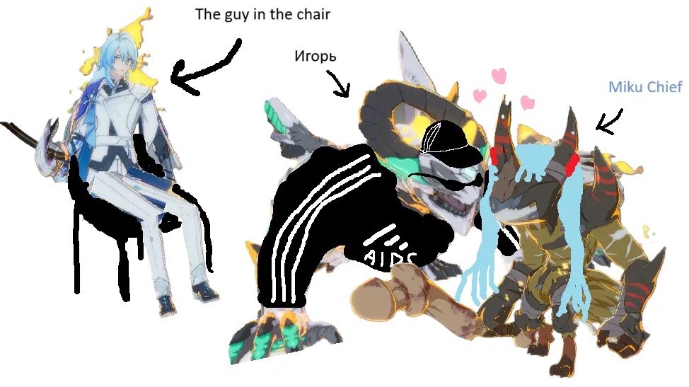
변경 기록
19/11/2026
- 여기저기 문구를 조금 수정했습니다.
- 대미지 공식에 기타 배율을 추가했습니다. 시즌 저항(기원 방어 무시에 영향), 시즌 강도 배율, 결속 배율(Unity Multiplier), 길드 레이드 보스 배율이 포함됩니다.
- S4 시즌 페이지에 서약 추천을 추가했습니다
17/11/2026
- 이매진 항목에 떠도는 방랑자를 광역용 선택지로 추가했습니다.
10/11/2026
- 이매진 및 포지션 스킬 항목에 이매진 포지션 스킬을 추가했습니다
- 한 번의 시전에서 프로스트 스피어 투사체가 여러 개 나가는 경우, 스피어가 무언가를 할 때 발동하는 모든 효과가 각각 독립적으로 발동한다는 사실을 어빌리티 항목에 반영했습니다. 해당 어빌리티: 계열 어빌리티, 별빛 동결, 프로스트 코멧.
3/11/2026
- S4 페이지에 340 장비 세팅 항목을 추가했습니다
- S4 플레이/딜사이클 항목을 갱신했습니다
- S4 심상의 항목을 갱신했습니다
- S4 이매진 항목을 출시 이후 상황으로 갱신했습니다
- 능력치와 장비 세팅의 추가 능력치 항목을 조금 수정했습니다
- 스킬 페이지의 퍼마프로스트 항목에 슈퍼 아머 언급을 추가했습니다(그런 게 있다는 걸 까먹었네요 ㅋㅋ)
- 플레이와 딜사이클 페이지를 조금 수정했습니다. 주로 파티원과 버프 이매진 관련입니다
16/10/2026
- S4 항목의 각인 추천을 갱신했습니다.
15/10/2026
- 320 장비 세팅 추천을 더 높은 치명타/행운을 주는 제작 투구, 갑옷, 부스트로 갱신했습니다.
- 레이드 무기 옵션 추천을 갱신했습니다.
- S4 최고 장비에서도 이그레우스/무크 두목이 보이스/무크 두목보다 좋아 보인다는 점을 이매진 항목에 반영했습니다.
- 모듈 우선순위를 갱신했습니다
- 계열 어빌리티 설명에 투사체마다 독립적으로 발동한다는 내용을 추가했습니다.
11/10/2026
- 초반 320 장비 세팅에 맞춰 한 페이지 가이드와 S4 시즌 페이지를 갱신했습니다.
9/10/2026
- 한 번의 시전에서 스피어가 여러 번 맞는 경우의 상호작용에 대해 별빛 동결에 메모를 추가했습니다. 발동하려면 같은 스피어 타격이 치명타와 행운의 일격을 동시에 터뜨려야 하는 것으로 보입니다.
8/10/2026
- 어빌리티를 S4 수치로 갱신했습니다
- S4가 나왔으니 문구를 조금씩 수정했습니다.
5/10/2026
- 최초 공개.
- 사용 스킬과 신규 이매진 관련 S4 내용을 일부 갱신했습니다.
- 광역용 선택지가 광역용이라는 점이 더 분명히 드러나도록 이매진 항목을 수정했습니다.
스킬
얼창 소개
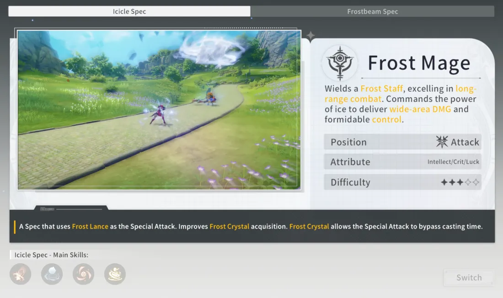
BPSR에서 얼창(스피어 계열)은 프로스트 메이지 클래스의 첫 번째 계열입니다. 얼창은 원거리 단일 대상에게 높은 폭딜을 넣는 데 뛰어나면서도, 다른 유틸리티로 광역 딜과 정리에도 상당히 기여합니다. 그 밖의 장점으로는 애니메이션 경직이 거의 없어 필요하면 언제든 회피할 수 있다는 점, 상황에 맞춰 여러 선택지를 고를 수 있는 유연한 4번째 스킬 칸, 신경 써야 할 쿨이 하나뿐이라 머리가 덜 피곤하다는 점이 있습니다. 폭딜 위주의 딜 구조 덕분에 기믹을 처리할 자연스러운 빈틈도 생기지만, 기믹이 폭딜 타이밍과 나쁘게 겹치면 문제가 되기도 합니다. 이런 요소들 덕분에 얼창은 매우 유연한 딜러 계열이며, 특히 전투를 미리 알고 그 안에서 위치와 타이밍을 잘 잡는 플레이를 크게 보상해 줍니다.
얼창은 대부분의 스킬 시전을 자동 전투(H)에 맡기는 게 좋기 때문에 자동 전투와 꽤 잘 맞는 편입니다. 폭딜 구간에서는 얼창의 자원, 혹은 자원이 모자란 상황도 현실적으로 손으로 하는 것보다 자동 전투가 더 잘 처리합니다. 다만 최대 효율을 내려면 타이밍을 맞춰야 하는 스킬이 많아서 그런 스킬은 대부분 자동 전투에서 빼 둬야 합니다. 그래도 타이밍은 꽤 쉽습니다. 폭딜 준비 단계에서 전부 쓰고 나면 나머지는 자동 전투가 알아서 하게 두면 됩니다.
얼창의 단점이라면 높은 치명타와 행운 능력치에 의존한다는 점인데, 이 때문에 시즌 초반에는 애매할 수 있습니다. 폭딜 구조 특유의 가혹함도 단점이 될 수 있습니다. 폭딜을 놓치면 다음 ~25초 동안 딜이 거의 안 나옵니다.
얼창의 가장 아쉬운 문제는 핑이 높으면 다른 클래스보다 상대적으로 더 손해를 본다는 점입니다. 높은 핑은 특정 시간 안에 스킬을 많이 시전해야 하는 클래스에 특히 영향을 주는 것으로 보이는데, 얼창은 안타깝게도 여기에 전부 해당합니다. 저는 개인적으로 EU 핑 100-110 ms로 플레이해 왔는데, NA 핑 30 ms와 비교해 딜 손실은 ~5-10% 정도라고 생각합니다. 200+ ms 핑부터는 제 110 핑과 비교해도 25% 넘게 손해를 본다는 제보를 봤으니, 연결이 정말 느리다면 얼창은 최선의 클래스가 아닐 수 있습니다.
일반 공격
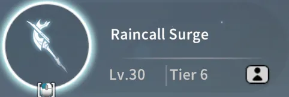
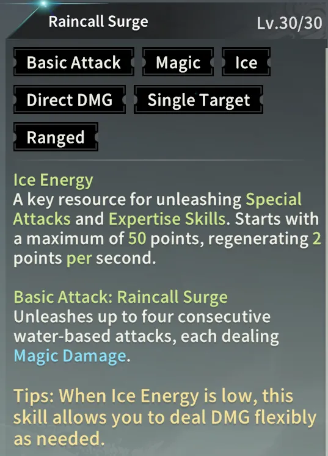
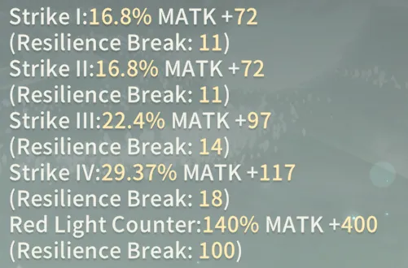
인게임 이름은 "레인폴"이며, 보통 그냥 "평타"라고 부릅니다.
아무것도 안 하는 것보다는 쓰는 게 낫습니다. 얼음의 계시 어빌리티 덕분에 평타가 고정 10% 확률로 아이스 애로우를 발사하고, 이 아이스 애로우가 미스틱 아이스를 하나 주기 때문에 급할 때 자원을 약간 만들 수 있습니다. 이상적으로는 평타를 쓸 일이 없어야 합니다.
이상적으로는 쓰지 않는 스킬이라 강화해도 대부분 능력 점수만 올라갑니다.
프로스트 스피어 (특수 공격)
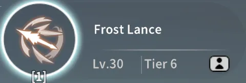
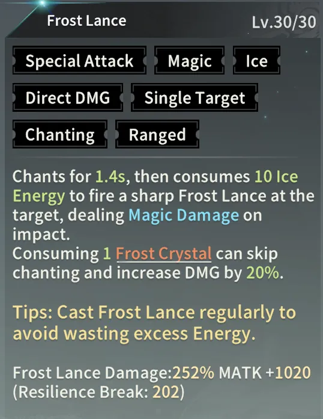
보통 "스피어"로 줄여 부릅니다.
얼창 계열의 특수 공격이자 이 계열의 주력 딜 스킬입니다. 미스틱 아이스를 소모해 즉시 시전되는 경우가 아니면 절대 쓰지 않는 게 좋으므로, 실질적으로 미스틱 아이스 하나가 스피어 한 번입니다. 얼창 계열의 핵심 목표는 퍼마프로스트 동안 스피어를 끝없이 쏠 수 있을 만큼 미스틱 아이스를 만들어 내는 것입니다. 워터 볼의 고정 생성이든, 계열 어빌리티 효과의 초기화든, 메테오 스톰의 도움이든 방법은 상관없습니다. 얼창 어빌리티 상당수도 여러 방식으로 프로스트 스피어를 강화합니다.
참고로 미스틱 아이스를 소모할 때 스킬 자체가 스피어에 범용 대미지 +20%를 부여합니다.
강화 우선순위 1순위입니다.
궁극 스킬, 극한・글레이셜 앤섬
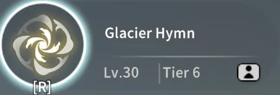
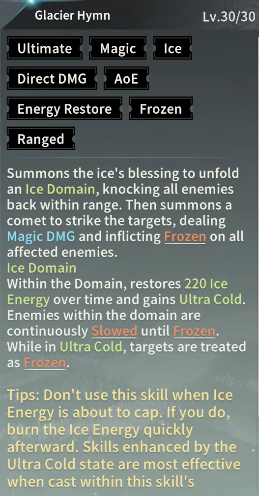
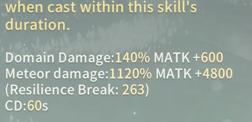
보통 그냥 "궁극기"로 줄여 부릅니다.
다른 모든 궁극기처럼 무적 프레임 용도로 쓸 수 있지만, 얼창이 궁극기를 쓰는 주된 이유는 버프입니다. 사용하면 발밑에 10초 동안 얼음 영역이 생기고, 그 안에 서 있으면 극한 버프를 계속 얻습니다. 극한 상태에서는 모든 적이 동결 상태로 취급되므로, 원래 동결이 한 번의 타격에만 주는 얼음 원소 대미지 +20%를 모든 타격이 받을 수 있습니다. 얼음 영역 어빌리티가 영역 안에 있을 때 얼음 원소 대미지 +25%를 추가로 주고, 극한은 다른 스킬에도 영향을 주기 때문에 얼창은 궁극기를 공격적으로 쓰는 것을 가장 선호합니다.
영역 밖으로 나가면 버프를 잃지만, 버프를 얻을 수 있는 범위는 눈에 보이는 것보다 꽤 넓습니다. 가운데에서 한 번 대시해도 거의 항상 범위 안에 있습니다. 방향키를 누르지 않고 뒤로 대시하면 두 번 대시해도 범위 안에 남아 있을 수 있습니다.
강화해도 스킬 대미지만 오르기 때문에 대부분 능력 점수만 올라갑니다.
메테오 스톰
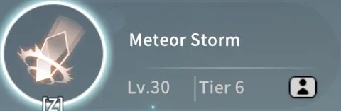
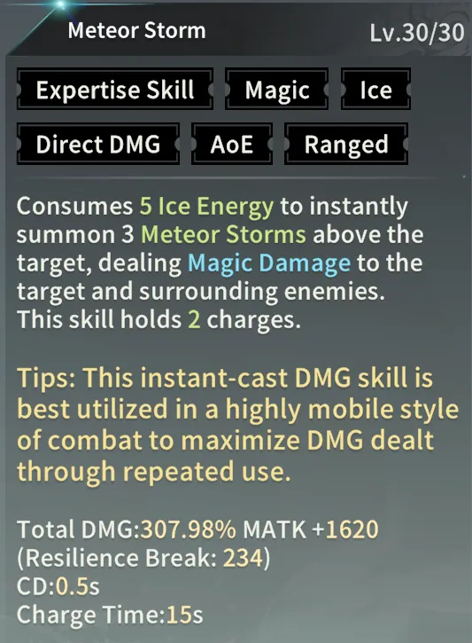
보통 그냥 "메테오"로 줄여 부릅니다.
얼창 계열의 두 번째 딜 스킬입니다. 메테오는 대부분 스피어가 치명타와 행운의 일격을 터뜨려 별빛 동결 어빌리티가 발동했을 때, 또는 쿨을 없애고 대미지를 올려 주는 끝없는 혹한 상태일 때 동작 없이 시전하게 됩니다. 끝없는 혹한이 아닐 때 메테오로 대미지를 주면 아이스 애로우가 발사되어 미스틱 아이스가 생깁니다. 이게 중요한 이유는, 별빛 동결 발동으로 메테오가 생기면 그 메테오가 미스틱 아이스를 만들고, 그걸로 스피어를 한 번 더 쓸 수 있기 때문입니다.
어빌리티를 다 찍으면 한 번 시전에 4번 타격하고 범위도 넓어서, 메테오는 얼창의 가장 큰 행운의 일격 공급원 중 하나이자 그만큼 광역 딜 공급원입니다.
S4에서 프로즌 게일이 퍼마프로스트를 조금씩 부여하게 해 주는 인자를 쓰게 되면 메테오는 스킬 바에서 빠질 가능성이 높습니다.
강화 우선순위는 스피어 바로 다음인 2순위입니다.
퍼마프로스트
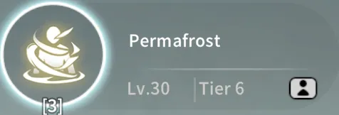
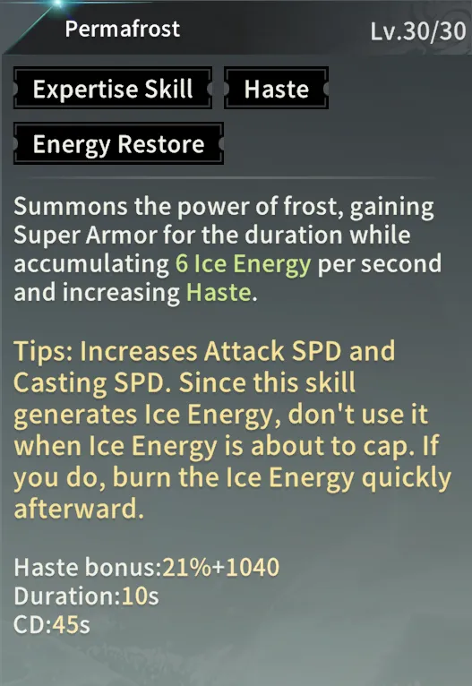
보통 그냥 "퍼마"로 줄여 부릅니다.
퍼마프로스트는 얼창 계열의 핵심 버프 스킬이자 실제로 신경 써야 할 유일한 쿨기입니다. 기본적으로 속공 21%를 고정으로 주는데, 공격 속도로 환산하면 ~4,6% 정도입니다. 여기에 어빌리티로 치명타 +5%, 치명타 대미지 +15%, 얼음 원소 공격 150, 프로스트 스피어 2회 타격이 추가됩니다. 지속 시간도 어빌리티로 15초까지 늘어납니다. 버프가 이렇게 크기 때문에 얼창이 하는 다른 모든 행동은 퍼마가 지속되는 동안 최대한 많은 딜을 넣기 위한 준비일 뿐입니다. 그러려면 퍼마 동안에는 가장 딜이 센 스피어만 계속 쓰는 게 좋습니다.
퍼마프로스트는 지속 시간 동안 슈퍼 아머도 주기 때문에, 그동안 맞아도 버틸 수 있는 공격이라면 맞으면서 딜하는 게 좋습니다. 강한 기절이 아니면 끊기지 않습니다. 슈퍼 아머는 받는 대미지를 줄여 주지 않으니 맞으면 죽는 공격이라면 여전히 피해야 합니다.
강화 우선순위는 스피어와 메테오 다음이지만, 주는 속공만 올라가서 효과는 그리 크지 않습니다. 그래도 이보다 나은 게 없으니 세 번째로 강화하는 게 좋습니다.
워터 볼
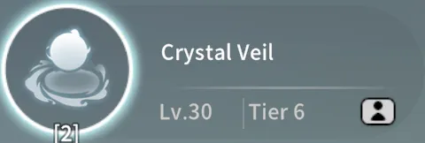
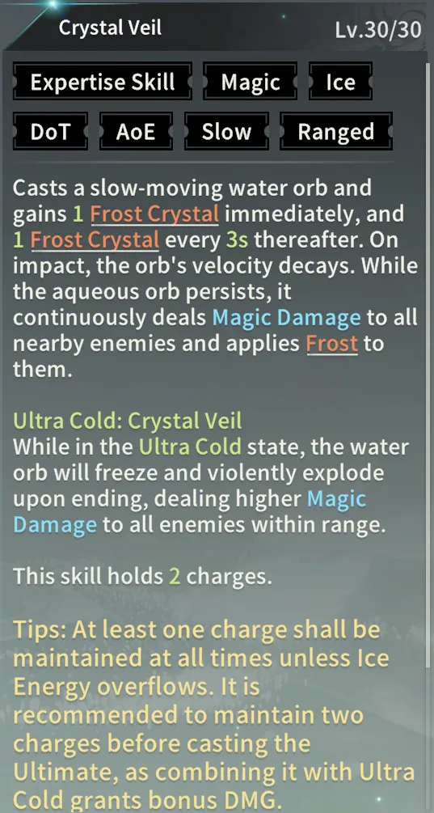
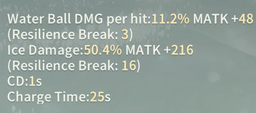
원문에서는 보통 "Veil"로 줄여 부릅니다.
워터 볼은 얼창의 주력 자원 생성기이자 마지막 핵심 스킬입니다. 시전하면 즉시 미스틱 아이스를 하나 만들고, 이후 3초 간격으로 2개를 더 만듭니다. 구체의 지속 시간이 끝날 때 극한 상태라면 구체가 얼어붙으며 폭발해 4번째 미스틱 아이스를 줍니다. 이 스킬의 대미지는 거의 없어서 순수한 자원 생성기라고 보면 됩니다. 보통 퍼마프로스트 전에 두 번 써 두면 퍼마 동안 미스틱 아이스가 생성되어 스피어를 끊김 없이 쓸 수 있습니다.
S3 레이드 세트와 S4 어빌리티 변경으로 워터 볼을 쓰면 아이스 에너지도 엄청나게 생기기 때문에, 이 자원은 신경 쓸 필요가 전혀 없습니다.
강화해도 스킬 대미지만 오르기 때문에 대부분 능력 점수만 올라갑니다.
메일스트롬
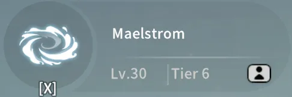
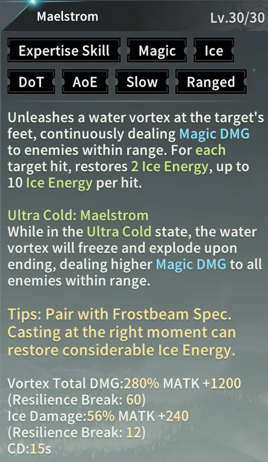
메일스트롬은 얼창의 4번째 스킬 1순위 선택지로, 몹몰이 상황이라면 거의 항상 써야 하는 스킬입니다. 의미 있는 딜은 없지만, 아주 강하고 넓은 끌어당기기 효과가 있어 이 효과에 취약한 근접 몹이라면 이것만으로 위험을 거의 다 없앨 수 있습니다. 지속 시간이 ~12초이고 지력 쿨타임 어빌리티로 쿨이 13.5초까지 줄어서 유지율도 거의 100%입니다. 메일스트롬이 몹을 아주 촘촘하게 모아 주니 파티 전체가 손쉽게 광역으로 몹을 쓸어버릴 수 있고, 그것만으로도 쓸 이유는 충분합니다.
메일스트롬은 몹 모으기 효과가 워낙 강해서, 거의 이것 하나만으로 어떤 몹몰이 전투에서든 메이지 계열 둘 중 어느 쪽을 골라도 좋은 선택이 됩니다. 다만 보스전에서는 아무 효과가 없으니 다른 스킬로 바꿔야 합니다.
강화해도 스킬 대미지만 오르기 때문에 대부분 능력 점수만 올라갑니다.
블리자드
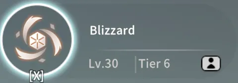
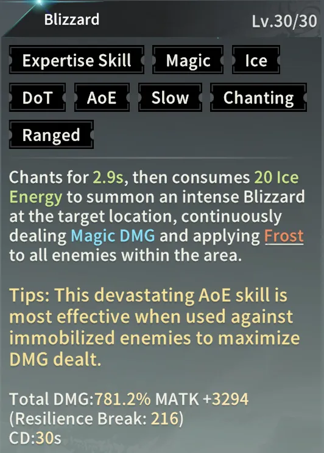
블리자드는 얼창의 4번째 스킬 중 딜이 가장 높은 선택지입니다. 프로스트 쇼크 어빌리티가 얼음 원소 대미지 +10% 디버프를 부여하기 때문입니다. 디버프는 10초 지속이고 타격할 때마다 부여되므로 실제 지속 시간은 15초에 가깝습니다. 퍼마 전에 써 두면 퍼마 지속 시간 대부분을 덮을 수 있는 정도입니다. 블리자드 자체의 스킬 대미지는 거의 의미가 없지만, 빙하 급류 어빌리티가 행운의 일격이 터질 수 있는 강화 버전도 주기 때문에 시전하면 직접 딜도 조금은 얻습니다.
블리자드는 몹몰이에서 메일스트롬의 유틸리티를 따라갈 수 없고, 보스전에서도 아이스 가드의 방어 유틸리티가 더 나을 때가 있습니다.
S3와 S4에서는 인자나 레이드 세트를 통해 블리자드가 동작 없이 꾸준히 시전되기 때문에, 당분간은 메일스트롬이나 아이스 가드 대신 블리자드를 직접 쓰는 이득이 거의 없습니다.
강화해도 스킬 대미지만 오르기 때문에 대부분 능력 점수만 올라갑니다.
아이스 가드
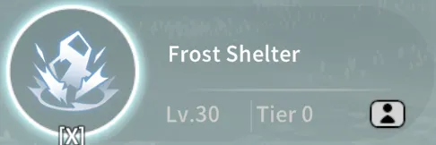
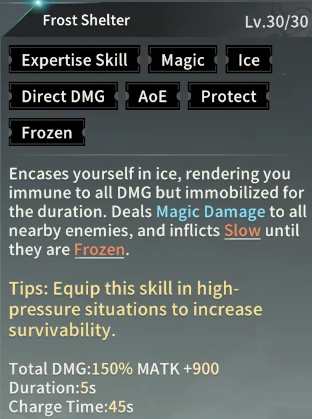
가끔 그냥 "가드"로 줄여 부릅니다.
아이스 가드는 얼창의 4번째 스킬로 진지하게 고려할 만한 마지막 선택지이자 가장 방어적인 스킬입니다. 사용하면 최대 5초 동안 무적이 되지만, 그동안 다른 스킬은 쓸 수 없습니다. 버튼을 다시 누르면 일찍 취소되니, 실수로 두 번 눌러 스킬을 날리고 피하려던 공격에 죽지 않도록 조심하세요.
아이스 가드의 주된 용도는 일부 보스 기믹을 아예 무시하는 것입니다. 얼마나 유용한지는 전투에 따라 다르지만, 좋을 때는 정말 좋습니다. 또한 내가 무적인 동안 파티원은 무적이 아니니 항상 혼자만 숨어 있을 수는 없다는 점도 기억하세요.
강화해 봐야 있지도 않은 대미지만 오르기 때문에 대부분 능력 점수만 올라갑니다.
프로즌 게일
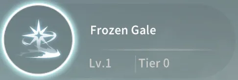
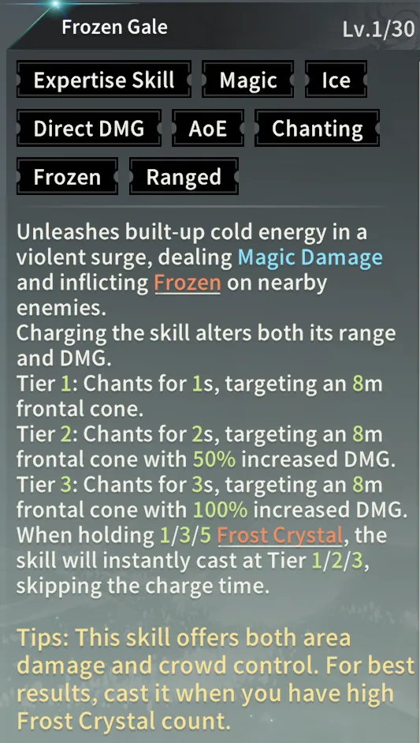
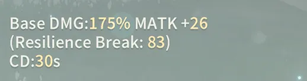
보통 "게일"로 줄여 부릅니다.
프로즌 게일은 얼창 어빌리티 트리에 관련 어빌리티가 없고, 기본적인 시너지도 사실상 없습니다. 그래서 이 스킬을 쓰고 싶어질 일은 거의 없을 것입니다.
얼창이라면 강화하지 마세요.
S4에는 게일을 적중시키면 퍼마프로스트를 3+초 부여하는 인자가 있습니다. 이게 다른 선택지 대신 게일을 쓸 만큼 충분한 이유가 될지는 두고 봐야 하지만, 지금까지 중국 서버 쪽을 보면 꽤 좋아 보입니다.
타이드풀
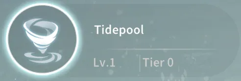
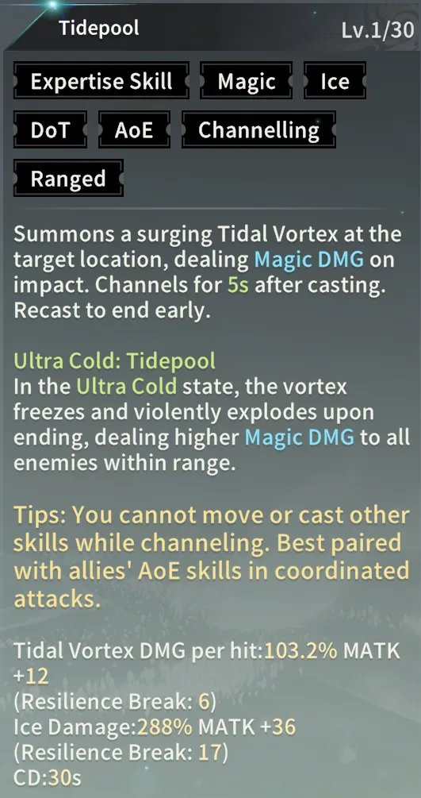
타이드풀은 얼창 어빌리티 트리에 관련 어빌리티가 없고, 기본적인 시너지도 사실상 없습니다. 그래서 이 스킬을 쓰고 싶어질 일은 거의 없을 것입니다.
S2에는 레이 계열(얼빔)의 강화 버전 타이드풀을 얻을 수 있는 버그가 있었습니다. 타이드풀이 얼창에서 진지한 선택지가 되는 건 그런 경우뿐입니다.
얼창이라면 강화하지 마세요.
요약
S4에서 게일이 도입되면서 얼창 스킬 구성이 크게 바뀔 것으로 보여 아래 내용이 정확하지 않을 수 있습니다. 테스트를 해 보는 대로 바로 갱신하겠습니다.
몹몰이:
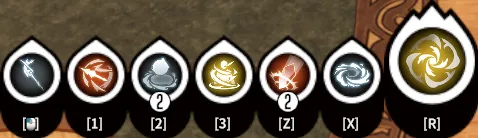
워터 볼, 퍼마, 메테오, 메일스트롬
보스/레이드:
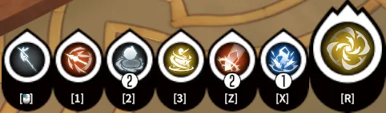
워터 볼, 퍼마, 메테오, 아이스 가드
또는
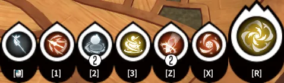
워터 볼, 퍼마, 메테오, 블리자드
강화 우선순위:
프로스트 스피어 T3
메테오 스톰 T3
프로스트 스피어 T6
메테오 스톰 T6
퍼마프로스트 T6
도움은 되지만 대부분 능력 점수 올리기용:
궁극 스킬 T6
블리자드 T6
나머지 전부 T6
어빌리티 트리
개요
얼창 어빌리티는 조금 묘한 위치에 있습니다. 시즌 인자나 심상의 트리로 능력치 가치가 바뀌는 것까지 감안해도 제가 보기엔 이미 정답이 나와 있기 때문입니다. 그러니 트리 일부를 사실상 전면 개편하지 않는 한, 여기 소개하는 트리가 바로 얼창 어빌리티 트리입니다.
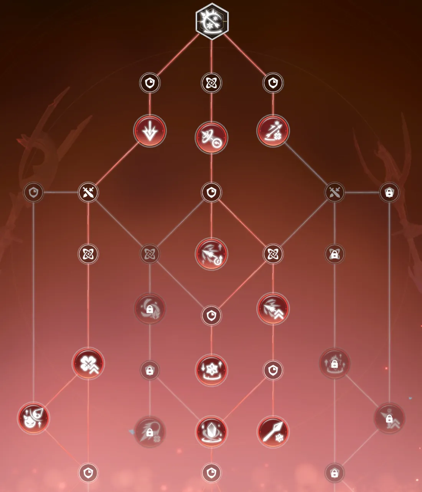
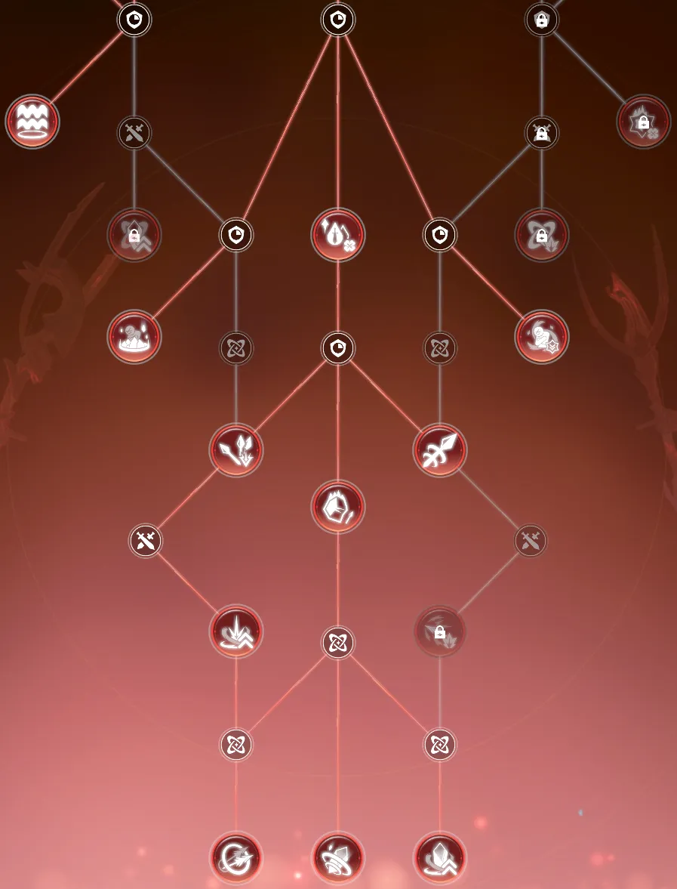
프로스트 메이지 기본 어빌리티
프로스트 메이지 기본 어빌리티 트리는 스피어 계열과 레이 계열이 공유합니다. 주로 뒤에서 확장되는 메커니즘을 소개하고, 메이지를 다른 클래스와 구별 짓는 보너스 몇 가지를 갖고 있습니다.
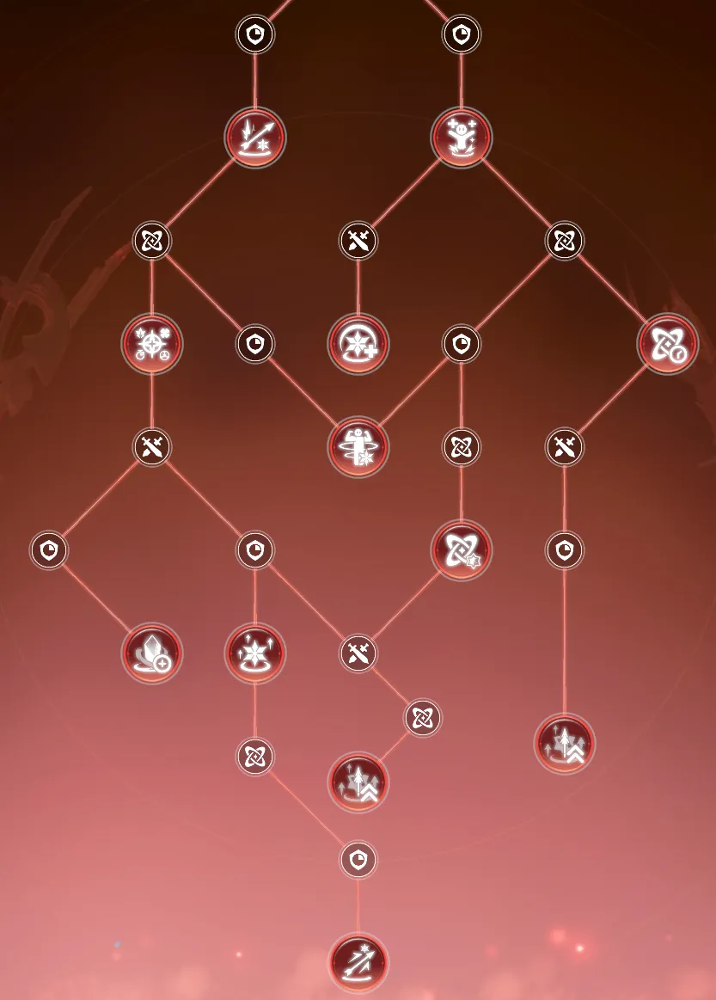
작은 노드
각각 얼음 원소 공격 +5, 내구력 +30, 지력 +10을 줍니다. 큰 노드로 가려면 반드시 찍어야 하고, 보너스가 워낙 작아서 큰 노드와 비교하면 없는 셈 쳐도 됩니다.
얼음의 계시
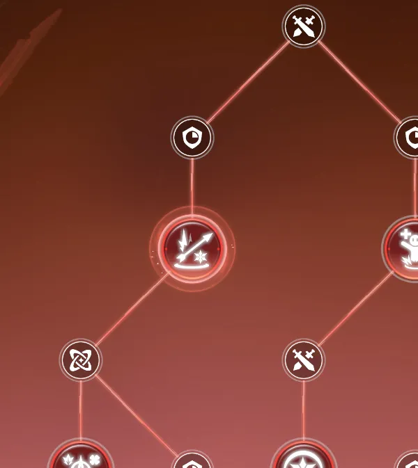
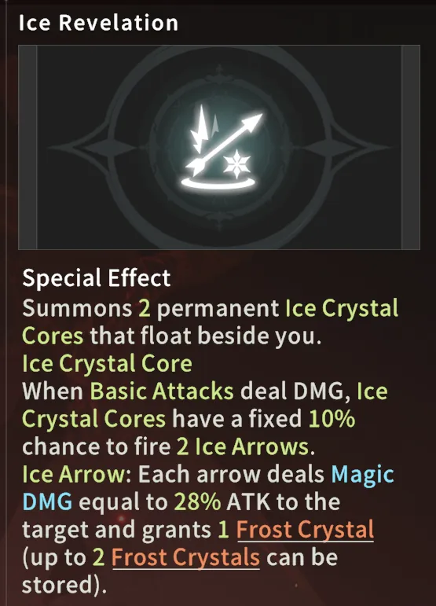
얼음의 계시는 미스틱 아이스를 생성하는 몇 안 되는 수단 중 하나라서 얼창에게 중요한 메커니즘 노드입니다. 일반 공격에 붙은 확률은 급할 때 도움이 될 수는 있지만 기대면 안 됩니다. 아이스 애로우가 미스틱 아이스를 생성하는 부분이 중요한데, 다른 어빌리티 상당수도 아이스 애로우를 소환하고 그 아이스 애로우 역시 미스틱 아이스를 생성하기 때문입니다. 설명에는 화살마다 미스틱 아이스를 1개씩 준다고 되어 있지만, 실제로는 아이스 애로우 2발 1세트당 1개만 얻으며, 아이스 애로우 세트가 소환되는 즉시 미스틱 아이스를 얻습니다.
아이스 애로우 타격은 치명타가 날 수 있고, 기본적으로는 행운의 일격을 발동하지 못합니다. 일부 인자 효과가 그 능력을 부여할 수 있습니다.
지력 전환
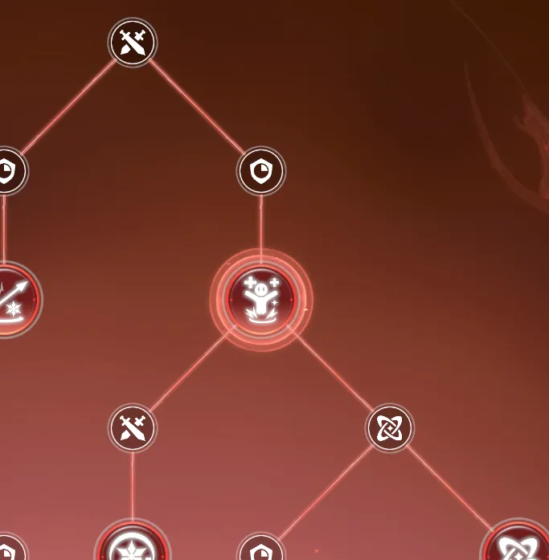
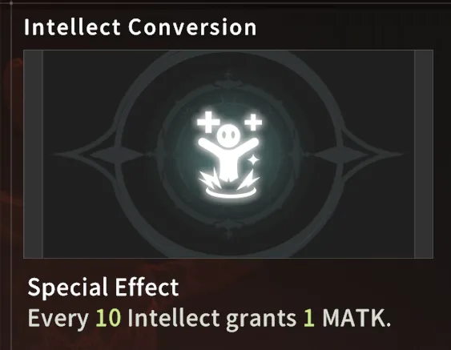
지력 전환은 지력 → 공격력 전환 비율을 높여 줍니다. 자세한 내용은 「능력치 총정리(All about stats)」를 참고하세요.
차등 증폭
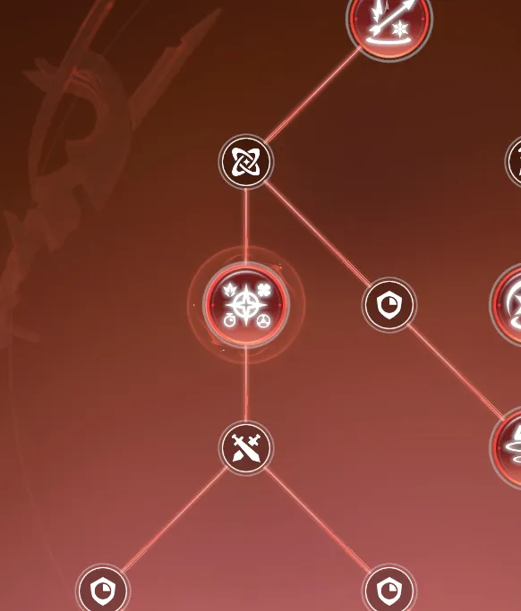
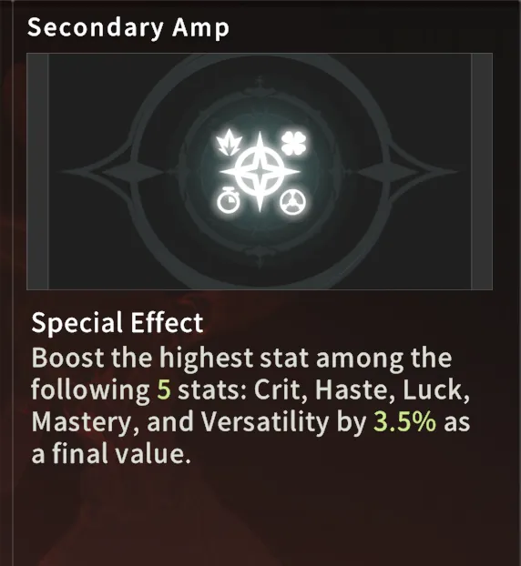
차등 증폭은 고정 수치가 가장 높은 추가 능력치에 3.5%를 더해 주는 괜찮은 버프입니다. 고정값으로 더해지므로 치명타가 50%라면 이 어빌리티로 53.5%가 됩니다.
얼창에서는 그때그때 어느 쪽을 올리는 게 나은지에 따라 항상 치명타나 행운에 붙습니다.
냉각의 순간
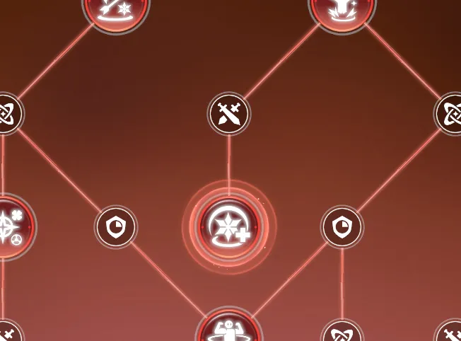
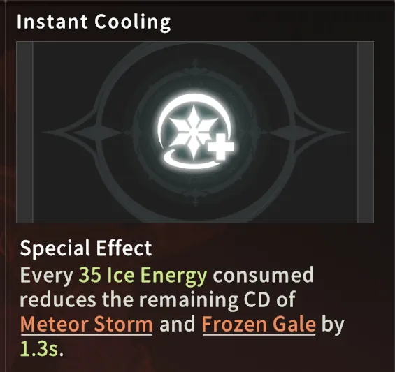
냉각의 순간은 얼창에게 대체로 의미가 없습니다. 프로즌 게일을 쓰지 않고, 메테오 스톰은 쿨이 없는 끝없는 혹한 중에 주로 쓰거나 별빛 동결로 쿨이 완전히 초기화되기 때문입니다. 다만 별빛 동결의 무동작 시전에 맞춰 메테오 스택을 2개로 채우는 데 가끔 조금 도움이 됩니다.
지력 쿨타임
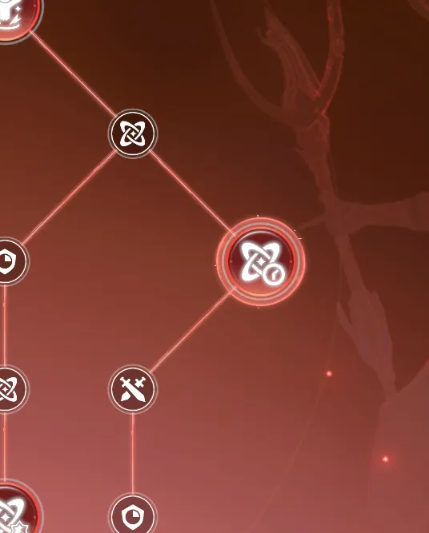
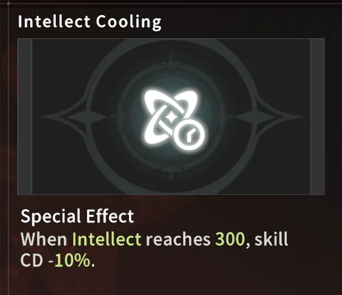
메이지 어빌리티 트리에서 꽤 독특한 효과 중 하나로, 지력 쿨타임은 모든 스킬과 이매진 쿨타임을 10% 줄여 줍니다. 시전할 때 쿨타임에서 10%를 깎는 방식이라, 쿨타임 45초인 퍼마프로스트를 쓰면 쿨이 40.5초부터 시작합니다. 환영 돌진에도 적용되어 원래 30초인 쿨이 27초가 됩니다.
서리 문양
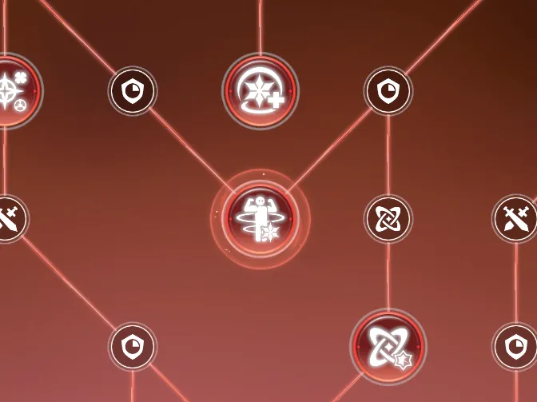
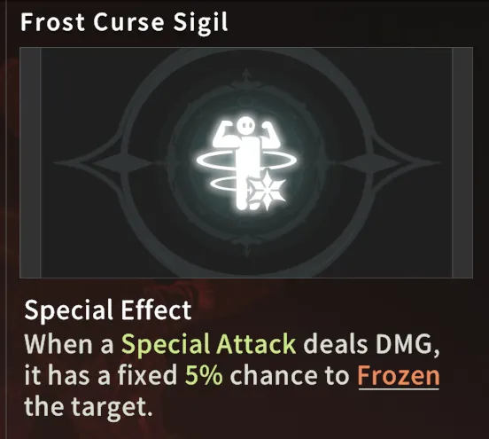
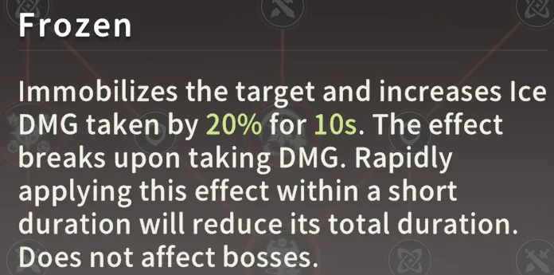
서리 문양은 확률이 매우 낮고, 얼창의 프로스트 스피어는 단일 대상 타격뿐이라 아주 미미한 버프입니다. 엘리트 상대로 가끔 도움이 되긴 하지만 동결을 거는 다른 수단이 있고, 적용 빈도에도 제한이 있어서 서리 문양이 하는 일은 대개 거의 없습니다.
빙혜
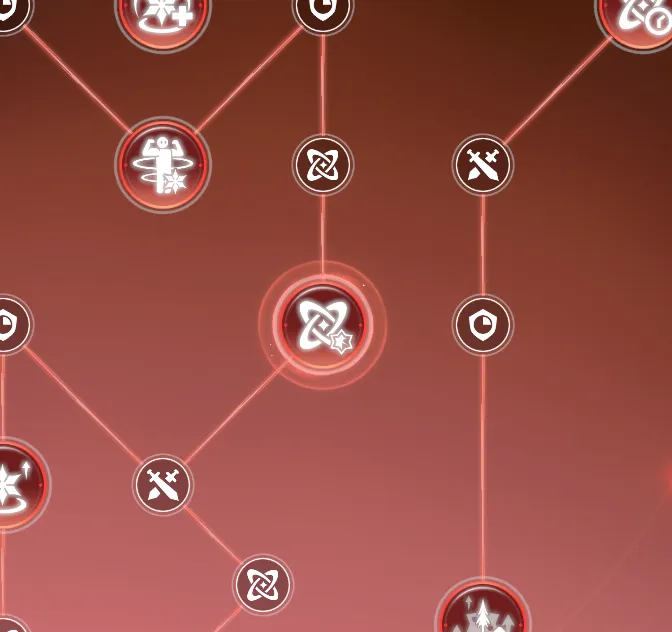
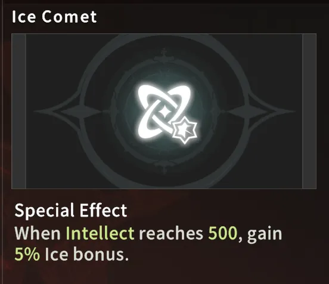
빙혜는 항상 얼음 원소 대미지 +5%를 줍니다. 숙련도 얼음 원소 대미지%를 주기 때문에 주로 숙련의 가치를 떨어뜨리는 효과가 있습니다.
신비한 기운
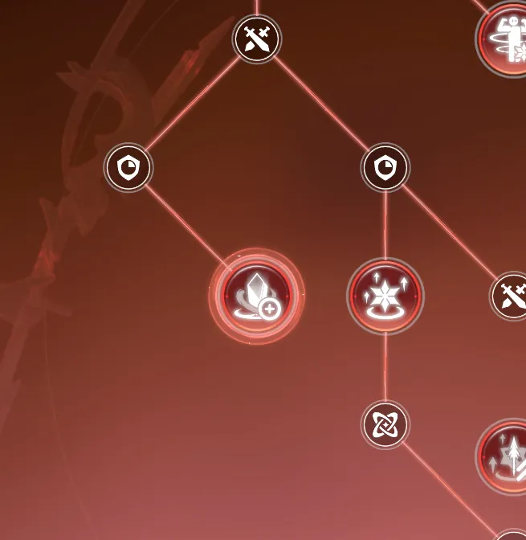
신비한 기운은 미스틱 아이스 최대치를 기본 2개에서 3개로 늘립니다.
차가운 흐름
얼창에게 아이스 에너지는 거의 중요하지 않아서 차가운 흐름은 아무 효과가 없는 거나 마찬가지입니다.
서늘한 기운・흐름과 서늘한 기운・날카로움
두 어빌리티는 수치만 다를 뿐 같은 효과입니다. 아이스 에너지는 얼창에게 상관없고, 둘을 합친 프로스트 스피어 범용 대미지 +16%는 그럭저럭 괜찮습니다.
작성자 메모:
출시 때부터 있던, 이 게임에서 제가 제일 좋아하는 엉터리 번역 사례입니다.
서리 폭발
서리 폭발은 아이스 애로우에 행운의 일격이 발동할 수 있는 두 번째 타격을 추가합니다. 얼창은 아이스 애로우가 주는 미스틱 아이스 때문에 아이스 애로우를 최대한 자주 발동시키고 싶어 하므로, 주로 행운의 일격 횟수를 늘려 주는 역할입니다.
얼창 어빌리티 - 상단 트리
그림 아래쪽에 있는 내구력 노드 3개 중 하나라도 찍으려면 트리의 이 부분에 어빌리티 포인트를 총 20개 써야 합니다. 계열 노드를 해금하는 1포인트도 여기에 포함됩니다. 얼창은 어차피 찍고 싶은 노드가 사실상 20개뿐이니, 제가 추천하는 노드는 다음과 같습니다.
스피어 계열
스피어 계열의 고유 효과는 프로스트 스피어가 치명타를 내면 30% 확률로 아이스 애로우 2발 1세트를 발동시킵니다. 이 아이스 애로우가 미스틱 아이스를 1개 주므로, 사실상 프로스트 스피어가 치명타일 때 30% 확률로 미스틱 아이스를 소모하지 않는 효과입니다. 얼창에서 치명타가 정말 좋은 가장 큰 이유가 이것으로, 딜과 자원을 동시에 주기 때문입니다.
시전 1회에 스피어 투사체를 여러 개 날리게 해 주는 어빌리티를 찍으면 투사체마다 독립적으로 이 효과 발동 확률을 굴립니다. 즉 운이 좋으면 스피어 한 번에 미스틱 아이스를 2개 얻을 수도 있습니다.
아이스 브레이크
아이스 브레이크는 메테오 스톰 시전 시 아이스 애로우 2발 1세트를 발사하게 해 주는 매우 중요한 어빌리티로, 이 화살이 미스틱 아이스를 1개 생성합니다. 미스틱 아이스를 생성하는 몇 안 되는 수단이라 무조건 찍습니다. 다른 좋은 어빌리티로 이어지는 길이기도 합니다.
에너지 절약
대부분 뒤쪽의 더 좋은 노드로 가기 위해 찍는 노드입니다. 프로스트 스피어가 아이스 에너지를 10 소모하면서도 5만 "소모한 것으로" 치게 만들어 다른 어빌리티와 상호작용이 좀 있지만, 다른 수단으로 아이스 에너지를 차고 넘치게 얻기 때문에 이 상호작용은 쓸 일이 드뭅니다.
폭설
폭설은 뒤에 안 좋은 어빌리티로 이어지긴 해도 꼭 찍어야 하는 꽤 중요한 어빌리티입니다. 기본적으로 워터 볼 2회 충전의 쿨타임 합계가 50초이고 퍼마프로스트가 45초라서, 이 어빌리티가 있어야 퍼마 전에 워터 볼을 항상 2번 쓸 수 있습니다. 그것만으로도 충분히 좋지만, 발동이 잘 터지면 거의 매 딜사이클마다 워터 볼을 3번째로 쓸 수도 있습니다. 현재 얼창은 가능할 때마다 스피어를 난사하고 싶어 하므로, 가끔이라도 워터 볼을 3번 쓰는 건 정말 좋습니다.
S4에서는 이 어빌리티가 워터 볼 시전 후 5초에 걸쳐 아이스 에너지 80을 생성하게 해 주어, 얼창에게 아이스 에너지라는 자원 개념을 거의 완전히 없애 줍니다.
심한의 법창
심한의 법창은 다른 좋은 어빌리티로 가는 길목에 있으면서 스피어에 범용 대미지 +70%라는 엄청난 버프를 줍니다. 미스틱 아이스를 소모하면 스피어 시전 시간이 즉시가 되므로 늘어난 충전 시간은 실제로는 상관없습니다. 그래서 항상 찍을 가치가 있지만, 동시에 스피어를 절대 미스틱 아이스 없이 생으로 시전하면 안 되는 큰 이유이기도 합니다.
예리한 빙폭
치명타 확률 +50%, 치명타 대미지 +15%는 아주 좋아 보이지만, 블리자드 자체의 딜이 너무 낮아서 다른 어빌리티가 더 많은 걸 줍니다. 트리상 위치 때문에 서리 칼날과도 심하게 겹쳐서, 현재로서는 포인트를 쓸 가치가 없습니다.
서리 칼날
서리 칼날은 미스틱 아이스를 소모할 때 스피어에 범용 대미지 +30%를 줍니다. 이 조건은 항상 충족되고 좋은 어빌리티로 이어지므로 늘 찍습니다.
얼음 영역
얼음 영역은 궁극기 후 바닥에 남는 얼음 지대 안에 있으면 얼음 원소 대미지 +25%를 줍니다.
동선에서 벗어나 있지도 않고 버프도 꽤 커서 찍습니다. 궁극기 영역 크기가 줄어드는 건 그리 큰 문제가 아닌데, 실제 범위가 이펙트보다 조금 넓기 때문입니다. 거의 항상 어느 방향으로 대시해도 영역 안에 남아 있을 수 있습니다. 방향키를 아무것도 누르지 않고 뒤로 대시만 하면 두 번 대시해도 버프가 유지됩니다.
행운 대미지
행운 대미지는 행운으로 얻는 행운의 일격 대미지 배율을 0.25에서 0.75로 바꾸고 고정 +15%를 더해 줍니다. 자세한 내용은 「대미지 공식(DMG formula)」을 참고하세요.
이 어빌리티 덕분에 얼창에서 행운의 일격이 딜이 되고, 좋은 어빌리티로 이어지므로 찍습니다.
유리 광야
스킬 설명에는 "얼음 원소 스킬"이라고 적혀 있지만 유리 광야는 엘리트와 보스 대상으로 범용 대미지 +8%를 줍니다. 좋은 어빌리티로 이어지는 길목이기도 하지만, 그게 아니더라도 20포인트를 채우기 위해 어차피 찍게 됩니다.
급속 동결 폭파
급속 동결 폭파는 스킬이 동결 상태의 적을 맞히면 프로스트 쇼크가 발동되게 합니다. 프로스트 쇼크는 행운의 일격이 터지지 않습니다.
하단 트리에서 찍지 않는 노드 중 그나마 조금이라도 가능성이 있는 유일한 노드입니다. 타격이 광역이라 광역 몰빵 빌드 같은 데서 쓸 수도 있겠지만, 실질 비용이 3포인트라 그것조차 애매합니다.
치명적인 얼음 창
얼창이 이미 +136%를 받고 있는 스킬 하나에 평균 범용 대미지 +7%를 더해 주는 것이 전부라, 치명적인 얼음 창은 얼창 트리 전체에서 손꼽히게 나쁜 어빌리티입니다. 이 어빌리티 뒤로 이어지는 어빌리티가 필요하더라도 아마 건너뛰는 편이 낫습니다. 시즌 밸런스 조정이 크게 오지 않는 한 제대로 된 얼창 빌드에서 쓰일 일은 없을 것입니다.
비바람의 변곡점
블리자드는 비바람의 변곡점으로 이어지는 예리한 빙폭을 찍어도 딜이 아주 낮고, 블리자드 버프의 가치는 딜사이클당 한 번만 써도 대부분 챙길 수 있습니다. 게다가 S3와 S4에서는 얼창이 동작 없이 시전되는 블리자드를 얻을 수 있어서 블리자드를 직접 들고 가는 것조차 다소 애매합니다. 이 모든 이유로 비바람의 변곡점의 쓸모는 거의 0에 가깝고, 시즌 변경으로 크게 영향을 받지 않는 한 쓰이지 않습니다.
끝없는 혹한
어빌리티 트리 한가운데에 있는 끝없는 혹한은 얼창 트리 하단부 대부분으로 가는 가장 좋은 길이라 사실상 강제 선택입니다. 효과 자체도 얼창의 핵심으로, 같은 이름의 상태는 얼창이 가진 두 가지 중요한 버프 상태 중 하나입니다.
이 상태에 있는 동안 메테오 스톰이 범용 대미지 +150%라는 엄청난 버프를 받고, 쿨타임이 사라지며 소모 없이 시전할 수 있습니다. 단점은 이 상태 동안 메테오가 아이스 애로우를 쏘지 않아 미스틱 아이스를 생성할 수 없다는 점입니다.
프로스트 스피어를 시전해 미스틱 아이스를 소모하면서 쌓은 스택이 20이 되면 즉시 끝없는 혹한 상태에 들어갑니다. 퍼마프로스트 도중에 20스택에 도달하면 끝없는 혹한은 퍼마프로스트가 끝난 뒤에야 발동하고, 그 동안 메테오는 20을 넘겨 얻은 스택 하나당 최종 대미지 +5%를 받습니다.
S3에서는 최종 대미지 버프가 총 40스택, 즉 +100%로 상한이 걸려 있었습니다.
더블 스피어
더블 스피어(Blizzard Dual Lance)는 프로스트 스피어가 모든 능력치가 같은 스피어를 한 발 더 쏘게 합니다. 추가 스피어는 캐릭터가 바라보는 방향 앞쪽 약 180도 범위 안에 두 번째 대상이 있을 때만 발사됩니다.
스피어가 치명타 및/또는 행운의 일격이 터질 때 발동하는 효과는 모두 이 추가 스피어로도 발동할 수 있어서, 이 효과가 켜져 있으면 사실상 모든 효과를 발동할 기회가 2번이 됩니다. 퍼마프로스트 중에는 얼음 창 연속 발사 어빌리티와 합쳐 3번까지 늘어납니다. 그래서 더블 스피어는 얼창에게 광역 상황에서 높은 안정성을 주고, 얼창을 멀리 흩어진 두 대상에게 딜을 넣는 데 가장 뛰어난 클래스 중 하나로 만들어 줍니다. 길드 사냥이 이 차이가 확실히 체감되는 상황입니다.
어빌리티 트리에서는 다른 어빌리티로 가는 길목에 있어 실질 비용이 1포인트이므로, 하단부에서 20번째 포인트로 찍는 경우가 많습니다. 순수 단일 상황에서는 아무 효과도 없으니 지력 +10이나 얼음 원소 공격 +5로 바꾸는 것이 이론상 최적입니다. 하지만 그 차이가 워낙 미미해서, 어빌리티를 이리저리 바꾸지 않아도 되도록 그냥 켜 두는 것을 추천합니다.
얼창 어빌리티 - 하단 트리
상단 트리에 20포인트를 써야 열리며, 정말 영향이 큰 어빌리티 대부분이 여기에 있습니다. 여기서는 실제로 선택지가 좀 있지만 전부 단순한 능력치 버프라 최선을 고르기는 꽤 쉽습니다. 제가 가장 좋다고 보는 구성은 다음과 같습니다.
끊기지 않는 흐름
끊기지 않는 흐름은 중첩형 버프인 미세한 흐름을 주기 때문에 가끔 그 이름으로 불리기도 합니다. 미세한 흐름은 총 얼음 원소 대미지 +5%를 주며 사실상 항상 켜져 있습니다.
네 개의 능력치 노드 중 하나로, 끊기지 않는 흐름은 여전히 채택권에 들지만 시즌별 능력치 가치 변화에 따라 좋아지거나 나빠질 수 있습니다. 지금까지 보면 S4에서 얼음 창 치명타가 버프를 받았는데도 끊기지 않는 흐름을 빼지는 않는 것 같습니다.
미스틱 아이스 능력 부여
미스틱 아이스 능력 부여의 수치는 시즌마다 바뀌며, S3에서는 최종 장비 기준으로 공격력을 약 3.5% 더 올려 줬습니다.
네 개의 능력치 노드 중 두 번째지만 채택되는 노드는 아닙니다. 미스틱 아이스 능력 부여의 수치가 너무 낮고, 고정 지력은 협주와 함께 플레이하면 크게 희석되기 때문에 현재는 찍지 않습니다. 끊기지 않는 흐름 없이는 실질 비용이 3이라서, 미스틱 아이스 능력 부여를 조금이라도 가치 있게 만들려면 사실상 끊기지 않는 흐름을 같이 찍어야 합니다.
메테오 스톰 동결
메테오 스톰 동결의 첫 번째 효과는 다소 사소하지만 그래도 쓸모가 있습니다. 메테오 스톰은 최대 4번 타격하므로 동결 부여가 매우 안정적이 됩니다. 이 어빌리티에서 더 중요한 부분은 퍼마프로스트 지속 시간 5초 증가입니다. 기본 지속 시간이 10초이므로, +5초는 얼창에서 가장 중요한 버프 스킬에 상당한 강화입니다. 이 때문에 채택됩니다.
별빛 동결
별빛 동결은 스피어에 메테오 스톰의 쿨타임을 즉시 초기화할 확률을 주고, 이미 충전이 2회라면 대미지 절반짜리 메테오를 동작 없이 한 번 시전합니다. 이렇게 공짜로 시전된 메테오는 아이스 애로우를 쏴서 미스틱 아이스를 생성하므로, 계열 어빌리티와 합치면 얼창은 퍼마프로스트 지속 시간 내내 스피어만 쏠 수 있을 만큼의 미스틱 아이스 생성량과 초기화를 확보합니다.
공격 속도가 없을 때 스피어 한 발 시전 시간은 약 0.44초(핑 110 기준)이므로, 공격 속도가 없으면 쿨타임 구간 안에서 네 번째 스피어를 맞히고 그 때문에 메테오를 놓치는 상황은 절대 생기지 않습니다. 또 공격 속도가 오르면 쿨타임 구간도 스피어 3발 시전 시간과 거의 같은 비율로 줄어들기 때문에, 스피어를 한 발씩 쏠 때는 이 쿨타임이 실제로 작동할 일이 없습니다. 시전당 스피어 투사체를 더 늘려 주는 효과가 있으면 각 스피어가 별빛 동결을 발동할 수 있는데, 이런 경우에는 쿨타임 때문에 스피어 시전 1회당 메테오 평균 최대치가 1회로 제한됩니다.
좋은 어빌리티로 이어지기도 하므로 별빛 동결은 반드시 찍어야 하는 어빌리티입니다.
작성자 메모:
-테스트해 보니, 스피어에 추가 타격을 주는 효과가 있을 때 별빛 동결을 발동하려면 같은 스피어 타격이 치명타와 행운의 일격을 모두 터뜨려야 하는 것 같습니다. 즉 스피어1이 치명타, 스피어2가 행운의 일격인 상황에서는 별빛 동결이 발동하지 않습니다. 그렇다면 스피어 두 발로 별빛 동결을 발동할 확률은 다음과 같습니다.
다른 분이 독립적으로 확인해 주시면 정말 감사하겠습니다.
-100% 확신은 없지만, 공짜로 시전된 메테오에는 최종 대미지 -50%가 붙는 것 같습니다. 그렇다면 끝없는 혹한의 최종 대미지%와 합연산으로 겹칠 것입니다. S4에서 끝없는 혹한의 상한이 사라졌으니 확인하기가 훨씬 쉬워질 것입니다.
프로스트 쇼크
프로스트 쇼크는 쿨타임 3초를 읽기 전까지는 괜찮아 보이지만, 그걸 읽는 순간 바로 끝입니다. 이것만으로도 쓸 가치가 없습니다. 더 나쁜 건, 여기까지 가는 어빌리티들이 잘해야 평균 이하라서 앞으로 시즌 변경이 크게 오지 않는 한 절대 쓸 일이 없다는 점입니다.
날카로운 추위
날카로운 추위도 시즌마다 수치가 바뀌는 어빌리티입니다. S3에서는 최종 장비 기준 치명타 대미지를 약 20% 줬는데, 이건 정말 좋은 수치입니다. 문제는 트리 너무 깊숙이 있고 그 앞의 어빌리티가 전부 너무 나빠서 포인트를 쓸 가치가 없다는 점입니다.
서리 침습
네 개의 능력치 노드 중 세 번째인 서리 침습은 블리자드가 좋은 가장 큰 이유 중 하나입니다. 이 어빌리티가 주는 디버프는 실제로 얼음 원소 대미지 +10%라서 끊기지 않는 흐름보다 좋습니다. 블리자드의 매 타격마다 디버프가 걸리므로 블리자드 한 번 시전으로 유지 시간이 15초에 가까워, 퍼마프로스트 구간을 대부분 버프하기에 딱 충분합니다. 동작 없이 시전되는 블리자드에서도 걸리기 때문에 블리자드 자체를 들고 가는 건 다소 애매해집니다.
블리자드를 자주 쓸 수 있는 것 같고, 네 번째 스킬로 블리자드를 들지 않더라도 서리 침습은 당분간 계속 쓰일 것으로 보입니다.
빙하 급류
블리자드는 DOT형 스킬이라 원래 행운의 일격을 터뜨릴 수 없지만, 강화된 블리자드는 터뜨릴 수 있습니다. 시전 시간 생략과 합쳐서, 빙하 급류는 블리자드가 네 번째 스킬 슬롯 후보라도 되는 유일한 이유입니다. 블리자드 딜 자체가 매우 낮아서 이 어빌리티의 대미지 증가는 아주 미미합니다.
그 자체만 보면 채택 어빌리티 중 아마 가장 쓸모없는 것이지만, 그 뒤의 어빌리티들이 워낙 좋아서 아무 효과가 없더라도 찍게 됩니다.
프로스트 코멧
프로스트 코멧은 스피어에 행운% 또는 21% 중 더 높은 쪽의 확률로 프로스트 코멧을 소환하는 효과를 줍니다. 대미지가 맞힌 적의 수에 비례해 커지므로, 대규모 광역 상황에서는 얼창의 가장 큰 딜 원천이 됩니다. 프로스트 코멧은 "행운 효과"이기도 해서 행운 효과 증가(Luck Effect Boost)의 혜택을 받고, 그래서 코멧은 행운에 따라 크게 성장합니다. 자세한 내용은 대미지 공식 항목을 참고하세요.
스피어 투사체를 여러 발 쏘게 하는 효과가 있으면 프로스트 코멧도 스피어 시전 한 번에 여러 번 발동할 수 있습니다.
냉기 치명타
냉기 치명타는 퍼마프로스트가 얼창에서 가장 중요한 스킬 중 하나인 이유 중 하나입니다. 치명타 대미지 +15%도 이미 꽤 좋지만, 이 어빌리티를 필수로 만드는 건 치명타 5%입니다. 모든 % 추가 능력치 버프와 마찬가지로 고정 수치를 백분율로 환산한 뒤에 적용되므로, 원래 치명타가 50%였다면 퍼마프로스트 시전 후 55%가 됩니다.
어빌리티 자체도 좋고 그 다음 어빌리티도 좋으므로 냉기 치명타는 얼창의 필수 선택입니다.
S3 이전까지는 파티 전체 치명타 3%가 얼창을 게임에서 가장 서포트 능력이 좋은 딜러로 만들어 주는 요소였습니다. 모든 아군에게 적용되므로 20인 레이드 파티 전체를 버프할 수 있고, 범위도 게임의 렌더링 거리와 거의 맞먹을 정도로 넓습니다.
극한의 창
피어싱 아이스 스피어(Piercing Lance)는 프로스트 스피어 시전 10회가 아니라 발사된 스피어 10발마다 나갑니다. 즉 더블 스피어와 얼음 창 연속 발사의 추가 스피어가 모두 피어싱 아이스 스피어의 발사 빈도에 영향을 줍니다. 피어싱 아이스 스피어는 어빌리티로 얻는 대부분의 타격과 달리 행운의 일격을 터뜨릴 수 있다는 점에서도 특별합니다.
트리상 위치 덕분에 극한의 창은 보통 1포인트만 들고, 지력 +10이나 얼음 원소 공격 +5보다 훨씬 좋으므로 채택됩니다.
얼음 창 치명타
얼음 창 치명타는 아마 채택권에서 처음으로 밀려나는 어빌리티일 것입니다. 스피어에 주는 치명타 대미지 15%는 좋지만, 스피어는 얼창 딜의 일부일 뿐이라 시즌 변경에 따라 가치가 크게 떨어질 수 있습니다.
S4에서 유지율 버프를 받았는데도 끊기지 않는 흐름보다 못합니다.
얼음 창 연속 발사
얼음 창 연속 발사는 퍼마프로스트 동안 프로스트 스피어가 한 발 대신 두 발을 쏘게 합니다. 두 스피어는 동시에 발사되고 모든 능력치를 공유합니다. 얼창의 가장 강력한 딜 스킬의 딜량을 사실상 두 배로 만들어 주므로 반드시 찍어야 하는 어빌리티입니다. 두 번째 스피어는 두 타격이 각각 독립적으로 확률을 굴리기 때문에, 프로스트 스피어가 치명타 및/또는 행운의 일격 효과를 모두 발동하는 데도 도움이 됩니다.
당연한 이유로 이 어빌리티는 얼창의 필수 선택입니다.
메테오 스톰 확장
단순하지만 매우 강력한 효과입니다. 메테오 타격 횟수 +1과 얼음 원소 대미지 +10%가 메테오 딜을 크게 올려 주고, 행운의 일격이 터질 타격 횟수도 늘려 줍니다. 이 모든 것이 얼창의 광역을 크게 강화하면서도 단일에서도 좋은 가치를 주므로, 메테오 스톰 확장은 얼창의 필수 어빌리티입니다.
인퓨전 승화
이 어빌리티를 찍으면 미스틱 아이스 4개를 들고 퍼마프로스트에 들어가서 최대한 많이 써야, 초기화 효과로 미스틱 아이스를 어느 정도 생성할 수 있습니다. 퍼마프로스트 중 얼음 원소 공격 150도 쏠쏠합니다. 이 수치는 S1 출시 이후 한 번도 갱신되지 않아서 시간이 갈수록 그 부분의 의미는 줄어드는 것 같지만, 다른 효과가 충분히 좋아서 인퓨전 승화는 여전히 씁니다.
미스틱 아이스 슬롯이 늘어나는 것의 주된 효과는, 초기화가 필요해지기 전까지 스피어를 더 많이 쏠 수 있다는 점입니다. 또 미스틱 아이스 초기화 대부분은 아이스 애로우가 명중해야 하는데, 그게 딱 미스틱 아이스가 0개로 떨어지면 스피어 연타가 눈에 띄게 느려질 정도의 시간이 걸립니다. 그래서 미스틱 아이스 보유량이 많을수록 운 나쁜 연속으로 0개까지 떨어질 가능성이 줄어 얼창이 더 안정적이 됩니다.
능력치와 장비
개요
얼창 세팅을 정하기 전에 각 능력치가 이 계열에서 무슨 역할을 하는지 알아야 합니다. 여기서는 얼창에서의 능력치 영향과 쓰임새만 다루며, 기본 효과 설명은 '능력치의 모든 것(All about stats)'을 참고하시기 바랍니다.
먼저 알아두셔야 할 점은 얼창에는 꼭 맞춰야 하는 능력치 구간도, 상한 초과(오버캡) 걱정도 없다는 것입니다. 하드 구간에 가장 가까운 것은 퍼마프로스트 동안 프로스트 스피어만 꾸준히 쓸 수 있을 만큼 미스틱 아이스를 확보하는 것 정도입니다. 모든 능력치는 언제나 얼창의 딜을 올려주며, 능력치가 낮다고 딜사이클이 바뀌지는 않습니다. 능력치가 높으면 사이클이 더 안정적으로 돌아갈 뿐입니다.
추가 능력치
치명타
얼창의 첫 번째 추천 추가 능력치이며, 가장 중요하다고 볼 수 있습니다. 얼창의 다음 효과들이 모두 치명타의 영향을 받습니다.
-계열 어빌리티로 프로스트 스피어가 치명타로 적중하면 30% 확률로 미스틱 아이스를 얻습니다.
-별빛 동결 어빌리티는 프로스트 스피어가 치명타로 적중하고 행운의 일격이 발동하면 메테오 스톰을 시전합니다.
-메테오 스톰 동결 어빌리티는 프로스트 스피어가 치명타로 적중해야 퍼마프로스트 +5초 연장이 적용됩니다.
이 효과들을 발동시키는 것은 얼창 플레이의 핵심이고 치명타 자체도 딜을 올려주므로, 십중팔구 치명타를 최대한 쌓게 됩니다. 치명타의 효과는 주로 미스틱 아이스 수급과 그로 인한 스피어 시전에 도움이 되므로, 치명타는 사실상 이 계열의 '단일 능력치'가 됩니다.
속공
속공은 얼창에서 어빌리티 연계가 없고, 주는 시전 속도도 쓸모가 없습니다. 공격 속도는 유용하지만 환산 비율이 상당히 나쁘고 퍼마프로스트가 고정 21%를 주기 때문에, 속공은 얼창이 적극적으로 피해야 하는 능력치가 됩니다.
행운
얼창의 두 번째 추천 추가 능력치인 행운도 이에 영향받는 효과 때문에 중요합니다.
-별빛 동결 어빌리티는 프로스트 스피어가 치명타로 적중하고 행운의 일격이 발동하면 메테오 스톰을 시전합니다.
-S4에서 프로스트 코멧은 프로스트 스피어 시전 시 21% 또는 행운% 확률로 생성됩니다.
치명타보다 영향을 주는 대상은 적지만, 행운도 그 효과 때문에 충분히 쌓을 가치가 있습니다. 행운 자체도 딜을 주므로 얼창은 행운을 최대치로 올리고 싶어 할 가능성이 큽니다. 행운이 주는 효과는 모두 얼창의 광역 딜을 크게 올려주므로, 행운은 사실상 이 계열의 '광역 능력치'가 됩니다.
숙련
프로스트 메이지에서 숙련은 숙련%의 0.65배만큼 얼음 원소 대미지%를 줍니다. 나쁘지는 않지만, 얼창은 이미 어빌리티에서 얼음 원소 대미지%를 많이 받기 때문에 숙련의 가치는 꽤 낮아집니다.
만능
만능은 딜과 방어를 동시에 조금씩 줍니다. 약간 있으면 언제나 도움이 되지만, 다른 능력치가 딜을 더 많이 주므로 만능은 쌓을 가치가 꽤 낮습니다. S3에서는 인장(sigils)에서도 만능을 충분히 얻기 때문에 장비로 쌓아도 이득이 거의 없습니다.
그 밖에 눈여겨볼 능력치
이 능력치들은 대부분 장비의 보라색 희귀 능력치나 모듈에서 항상 얻게 됩니다. 추가 능력치와 경쟁하지는 않고, 사실상 서로끼리만 경쟁합니다.
지력
지력(Int)은 얼창이 쓰는 메인 능력치입니다. 지력은 주로 공격력을 얻는 데 쓰이지만, 받는 마법 대미지를 줄여주는 마법 방어도 줍니다. 가끔 유용할 때도 있지만 보통은 적을 죽이는 쪽이 더 유용하고, 딜러인 얼창은 공격 목적으로 지력을 원합니다.
마법 공격력
마법 공격력(MATK), 보통은 그냥 공격력이라고 부르는 이 수치는 지력에서 환산되는 기본 수치로, 다른 모든 배율이 여기에 곱해지므로 중요합니다. 공격력은 BPSR에서 꽤 귀하며 주로 공격력%로 나옵니다. 얼창은 공격력을 다른 용도로 쓸 방법이 없으므로, 공격력%는 대체로 최대 딜을 위해 균형을 맞추고 싶은 배율 중 하나입니다. 꽤 귀하기 때문에 선택지가 있다면 공격력%는 최선 중 하나일 가능성이 매우 높습니다.
공격 속도
공격 속도는 아마 얼창이 쓰는 능력치 중 가장 복잡한 능력치일 것입니다. 첫 번째 단계로, 공격 속도가 높을수록 퍼마프로스트 버프 시간 안에 스피어를 더 많이 쓸 수 있어 딜이 올라갑니다.
두 번째 단계로, 미스틱 아이스가 0개로 떨어지는 순간 공격 속도로 얻는 이득은 거의 완전히 사라집니다. 또 공격 속도를 더 올려도 스피어를 한 번 더 넣기에는 부족할 때가 있어서, 그 구간 사이의 공격 속도는 사실상 모두 낭비되기도 합니다.
세 번째 단계로, 핑과 렉이 넣을 수 있는 스피어 횟수에 영향을 주는데, 이들은 변동하고 통제할 수 없으므로 구간이 더 이상 고정되지 않습니다. 그래서 렉이 어느 정도 생긴다고 가정하면(생깁니다), 그리고 얼창은 구간 간 차이가 다소 작기 때문에, 공격 속도의 평균 효율은 다른 능력치와 비슷하게 1+x% 배율과 거의 같아집니다.
솔직히 어느 단계의 분석이 맞는지는 잘 모르겠지만, 저는 세 번째 쪽으로 기웁니다. 그래야 효율을 조금이라도 계산할 수 있기 때문입니다. 게다가 공격 속도가 높으면 모든 사이클이 더 부드럽고 반응성 좋게 느껴진다는 점도 있습니다. 이 효과는 수치화가 거의 불가능하지만, 개인적으로는 공격 속도가 높을수록 거의 언제나 플레이감이 더 좋았습니다.
공격 속도는 얻기 매우 드문 옵션이고 아주 높게 쌓을 수도 없으므로, 놓치면 기회비용이 특히 큽니다.
치명타 대미지
얼창은 치명타를 쌓으므로 그 치명타를 더 세게 만드는 것은 좋습니다. 얻을 수 있는 곳이 몇 군데 없고, 나머지 곳에서 모두 챙긴 게 아니라면 마지막 한 자리는 다른 것을 고르는 편이 나을 수도 있습니다. 그래도 매우 자주 최선의 선택지 중 하나입니다.
범용 대미지%
프로스트 스피어와 메테오 스톰은 모두 범용 대미지(Generic DMG)를 100% 넘게 받을 수 있고, 행운의 일격도 쉽게 60% 이상 받기 때문에, 얼창에서 범용 대미지%의 가치는 엄청나게 낮아질 수 있습니다. 다른 선택지가 없을 때는 그래도 챙기지만, 딜 상승량 면에서는 다른 능력치 대부분이 더 낫습니다.
장비 세팅
BPSR에서 장비를 맞출 때 능력치 하나를 얻는 가장 큰 비용은 다른 것을 얻지 못하는 기회비용입니다. 그래서 장비마다 능력치 '굴림'이 있고, 언제나 가장 이득이 큰 것을 고르고 싶다고 생각하시면 됩니다.
장비의 높은 능력치는 항상 낮은 능력치의 두 배이고, 재련 옵션은 항상 낮은 능력치의 60%입니다. 그래서 장비마다 능력치 '굴림'이 세 번 있고 그중 두 개는 같아야 한다고 생각하면 편합니다. 레이드 장비는 능력치가 고정되어 있는데, 항상 해당 계열의 추천 추가 능력치이며 둘 다 일반 장비의 높은 능력치와 같습니다. 레이드 장비를 돌파로 강화할 수 있다면 능력치가 더 높아집니다. 능력치가 더 높기 때문에 거의 언제나 레이드 세트 6세트로 갑니다. 6세트를 쓴다는 것은 사실상 장신구의 능력치와 각 부위의 재련 옵션만 고를 수 있다는 뜻이기도 합니다.
얼창의 두 추천 추가 능력치는 핵심 효과와 딜을 동시에 줍니다. 또 다른 선택지 능력치는 그럭저럭부터 거의 쓸모없음 수준이라서, 사실상 모든 얼창 세팅은 시즌에 따라 더 좋은 쪽인 치명타나 행운을 완전히 최대치로 올리는 데 집중합니다. 그다음 남은 능력치를 나머지 하나에 몰아주는 것이 가장 이득일 가능성이 큽니다. 다만 마지막 몇 포인트는 숙련 및/또는 만능에 넣는 것이 보통 좋은데, 한 능력치의 처음 고정 수치가 가장 가치 있기 때문입니다. 또 한 능력치에 고정 수치를 많이 넣을수록 얻는 능력치%가 줄어들어서, 치명타/행운의 마지막 굴림들은 더 이상 그렇게 가치 있지 않습니다.
추가 능력치
이제 장비 자체로 넘어가겠습니다. 행운 최대치 얼창 장비 능력치 예시는 다음과 같습니다.
| 능력치 1 | 능력치 2 | 재련 | |
|---|---|---|---|
| 무기 | 치명타 | 행운 | - |
| 투구 | 높은 치명타 | 높은 행운 | 행운 |
| 갑옷 | 높은 치명타 | 높은 행운 | 행운 |
| 장갑 | 높은 치명타 | 높은 행운 | 행운 |
| 신발 | 높은 치명타 | 높은 행운 | 행운 |
| 귀걸이 | 높은 행운 | 낮은 치명타 | 행운 |
| 목걸이 | 높은 치명타 | 낮은 숙련 | 행운 |
| 반지 | 높은 행운 | 낮은 치명타 | 행운 |
| 팔찌(왼쪽) | 높은 치명타 | 높은 행운 | 행운 |
| 팔찌(오른쪽) | 높은 치명타 | 높은 행운 | 행운 |
| 탈리스만 | 높은 행운 | 낮은 숙련 | 행운 |
레이드 세트 고정 능력치는 빨간색이고, 실제로 능력치를 고를 수 있는 부위는 초록/파랑입니다. 파란색 표시는 패턴에서 벗어난 부분입니다. 목걸이는 행운이 붙을 수 없어서 대신 높은 치명타·낮은 숙련을 고르고, 탈리스만은 치명타를 골라도 되지만 숙련 두 번째 굴림도 괜찮습니다. 참고로 숙련 두 번째 굴림이 있는 부위를 낮은 치명타 굴림이 있는 아무 부위와 바꿔도 최종 능력치는 똑같습니다.
치명타 최대치로 맞춘 두 번째 예시입니다.
| 능력치 1 | 능력치 2 | 재련 | |
|---|---|---|---|
| 무기 | 치명타 | 행운 | - |
| 투구 | 높은 치명타 | 높은 행운 | 치명타 |
| 갑옷 | 높은 치명타 | 높은 행운 | 치명타 |
| 장갑 | 높은 치명타 | 높은 행운 | 치명타 |
| 신발 | 높은 치명타 | 높은 행운 | 치명타 |
| 귀걸이 | 높은 치명타 | 낮은 행운 | 치명타 |
| 목걸이 | 높은 치명타 | 낮은 숙련 | 치명타 |
| 반지 | 높은 치명타 | 낮은 만능 | 치명타 |
| 팔찌(왼쪽) | 높은 치명타 | 높은 행운 | 치명타 |
| 팔찌(오른쪽) | 높은 치명타 | 높은 행운 | 치명타 |
| 탈리스만 | 높은 행운 | 낮은 숙련 | 치명타 |
목걸이는 행운이 붙을 수 없어서 대신 숙련을 고릅니다. 탈리스만과 반지는 반지에서 행운 굴림 하나를 잃지만 탈리스만에서 되찾으므로, 결과적으로 치명타 굴림 두 개를 만능/숙련 굴림 하나씩으로 바꾼 셈입니다. 이번에도 반지/탈리스만의 능력치를 다른 아무 부위로 어떤 순서로 옮겨도 최종 능력치는 변하지 않습니다.
보라 옵션 / 희귀 능력치
장신구의 보라 옵션은 얼창에게 사실상 선택지가 하나뿐입니다.
공격 속도는 퍼마 동안 스피어를 더 많이 쓰게 해주므로 이득이 가장 큽니다. 두 번째 선택지인 공격력%는 그만큼 좋지 않고, 이매진이나 파티 버프로도 얻을 수 있는 반면 공격 속도는 대부분 그럴 수 없으므로 공격 속도로 가는 것이 낫습니다.
시즌 초 레이드 장비 이전 단계이거나, 2%로 스피어를 한 번 더 넣지 못하는 상황 등에서는 공격력%가 더 낫습니다. 하지만 레이드 이전 능력치를 그렇게까지 최적화하는 것은 추천하지 않고, 나중에 공격력%로 바꿔서 얻는 이득은 작고 보장되지도 않으므로 그냥 공격 속도를 유지하시길 추천합니다.
레이드 무기 옵션
얼창 레이드 무기에는 현재 다음 다섯 가지 옵션 중 하나를 붙일 수 있습니다.
(마법 대미지 +8%, 너는 왜 그러니?)
마법 대미지 +8%는 범용 대미지%이고, 얼음 원소 보너스 +8%는 얼음 원소 대미지%입니다.
이 중 마법 대미지와 얼음 원소 보너스는 보통 얼창에서 이미 꽤 포화 상태이고, 지력%는 공격력%보다 못하므로 실질적인 선택지는 공격력%와 치명타 대미지입니다.
어느 쪽이 나은지는 이매진에 따라 다릅니다. 무크 두목이 없으면 치명타 대미지가, 무크 두목이 있으면 공격력%가 낫습니다.
물론 예외가 있습니다. 무크 두목/무크 선봉병 조합에서는 치명타 대미지가 낫습니다.
작성자 메모:
-시즌이 진행되고 더 정확한 정보가 나오면 갱신하겠습니다.
모듈
S4 얼창의 모듈 우선순위는 대략 다음과 같습니다.
생명 파동 / 생명 파동5 >> 대미지 중첩6 / 아무거나6+아무거나5 > 공격 속도 집중력 / 치명타 집중력 / 특수 공격 대미지 강화 / 대미지 중첩5 > 엘리트 타격 / 지력 강화 > 행운 집중력
극・생명 파동은 단연 최고의 모듈이며, 2x6 조합에 이것 하나만 있어도 대부분의 3x6 조합을 이길 가능성이 높으므로 항상 끼고 다니시면 됩니다.
생명 파동 다음으로는 나머지 모듈이 위 순서를 따르며, 1:1로 더 높은 '티어' 항목으로 바꾸면 더 좋은 결과가 나와야 합니다. 같은 티어 안의 선택지는 서로 충분히 비슷해서 개인의 장비·이매진, 취향, 상황(단일/광역)에 따라 어느 것이든 최선일 수 있으니 마음에 드는 것을 고르시면 됩니다. 딜 차이는 아마 0.5% 미만일 것입니다.
모듈 최적화 도구 사용을 강력히 추천합니다. 수백 개의 모듈을 직접 하나하나 살펴보다 보면 가진 것 중 최고의 조합을 놓치기 쉽습니다.
작성자 메모:
-시즌이 진행되고 더 정확한 정보가 나오면 갱신하겠습니다.
바다 무기 옵션
얼창은 고정 추가 능력치 중 가장 높고 이득도 가장 큰 치명타와 행운 +6%를 항상 고릅니다. 치명타가 높아지므로 치명타 대미지가 최선일 가능성이 더 크지만, 그 외에는 레이드 옵션 선택도 레이드 무기와 비슷합니다.
바다 무기 고유 옵션(ocean unique line)으로는 다음 선택지가 있습니다.
마법 증폭(MAG Boost)은 얼창이 바다 무기 옵션이나 그것을 주는 포션 하나로만 얻을 수 있는 배율이라서, 사실상 딜에 대한 진짜 배율입니다. 퍼마프로스트 중 마법 증폭 +6%가 이 3개 중 최선일 가능성이 높습니다.
작성자 메모:
-100% 확실하지는 않지만, 세 번째 옵션은 원래 '행운의 일격에만 마법 증폭 +6%'여야 하는데 번역이 잘못된 것뿐이라고 들었습니다. 확인해 주시면 감사하겠습니다.
이매진과 포지션 스킬
이매진 입문
얼창은 이매진을 주로 퍼마프로스트를 최대한 강하게, 최대한 자주 강화하는 데 씁니다. 이 제약 때문에 쿨타임 80초짜리 1충전 이매진은 퍼마를 한 번 걸러 한 번씩만 강화할 수 있어서 상당히 불리합니다. 2충전 이매진은 이런 문제가 거의 없는데, 두 번째 충전 쿨타임이 사실상 항상 돌고 있으므로 표기된 쿨타임보다 훨씬 자주 쓸 수 있기 때문입니다.
위와 같은 이유로 얼창이 고를 수 있는 이매진은 다소 적은 편인데, 좋은 이매진들이 경쟁 후보들보다 꽤 앞서 있기 때문입니다. 얼창의 일반적인 이매진 우선순위는 다음과 같습니다.
| 최종 세팅 | 이그레우스 t5 / 보이스 t5 |
|---|---|
| 차선책 | 이그레우스 t5 / 무크 두목 t5 |
| 또 다른 차선책 | 무크 두목 t5 / 보이스 t3+ |
| 시작 단계 | 무크 두목 t0+ / 무크 선봉병 t5 |
S4에서는 최종 장비 기준으로도 이그레우스/무크 두목 조합이 보이스/무크 두목보다 나은 것으로 보입니다.
이 조합들은 모두 몹몰이와 단일 상황 양쪽에서 쓸 수 있지만, 몹몰이 전용 상황별 선택지도 몇 가지 있으며 주력 이매진 다음에 다룹니다.
주력 이매진
이그레우스
패시브는 합계 +35% 치명타 대미지를 주고, 액티브는 치명타 60% 초과분에 따라 달라지는 양을 줍니다. t5 기준 전환 비율은 0.4이므로, 예를 들어 치명타 73%라면 액티브로 13*0,4 = 5,2% 치명타 대미지를 얻습니다. 또한 치명타 120%에서 얻는 치명타 대미지 24%가 상한입니다.
이그레우스는 매우 큰 치명타 버프와 함께 꽤 많은 치명타 대미지도 줍니다. 2충전과 60초 충전 시간 덕분에 거의 매 퍼마마다 쓸 수 있어 버프 유지율도 훌륭합니다. 이런 이유로 이그레우스는 현재 얼창의 최종 세팅 이매진 중 첫 번째입니다.
무크 두목 t5에서 이그레우스로 갈아탈 때는 이그레우스를 t5까지 올려야 더 좋아집니다. 60초 쿨타임과 그로 인한 유지율 증가가 그만큼 중요합니다.
무크 두목
무크 두목은 이그레우스의 동생격입니다. 쿨타임과 2충전이 같고, 차이는 주는 버프뿐입니다. 무크 두목은 패시브 치명타 대미지가 조금 적고 액티브의 치명타도 더 적지만, 액티브의 어마어마한 +40% 치명타 대미지로 어느 정도 만회합니다. 종합하면 무크 두목은 이그레우스보다 살짝 약하지만 육성 비용이 더 싸므로, 얼창이 처음 키울 금색 이매진으로 아주 당연한 선택입니다.
초반에는 이그레우스와 무크 두목을 같이 쓰는 것도 괜찮은데, 행운 위주로 맞추고 두 이매진으로 엄청난 치명타를 얻을 수 있기 때문입니다. S4에서는 치명타와 행운에 추가 계수가 붙은 덕분에 이 이중 치명타 조합이 실제로 두 번째로 좋은 이매진 조합이며, NPC 이매진 1개 선택지로는 무크 두목/보이스보다 낫습니다.
보이스
액티브는 16+ 5x2 = 26 공격력%를 주며, 이는 시전 시 받는 20초 버프에 묶여 있습니다. 공격 속도와 시전 속도는 별도의 20초 버프이며 총 35초까지 연장할 수 있습니다. 「얼음의 힘」이 시전 시 받는 공격력% 버프이고, 「얼음의 힘 - 극」이 공격/시전 속도 버프입니다.
보이스는 얼창이 좋아하는 능력치를 많이 주며, 모두 서로 곱연산으로 작용합니다. 2충전과 80초 쿨타임 덕분에 퍼마 직전에 쓸 수 있는 경우가 매우 많고, 공격 속도 버프가 끝없는 혹한까지 이어지는 것도 쏠쏠한 보너스입니다. 이 모든 요소 덕분에 보이스는 얼창에게 매우 강력한 스탯 막대기이며, 이그레우스와 함께 쓰는 두 번째 최종 세팅 이매진입니다.
무크 선봉병
무크 선봉병은 중첩형 패시브로 총 15 공격력%를 줍니다. 액티브는 이를 20초 동안 2배인 30 공격력%로 늘립니다.
BPSR에서 공격력%는 의외로 드물기 때문에 무크 선봉병의 패시브 15%와 액티브 30%는 정말 좋습니다. 여기에 보라색 이매진이라는 특권 덕분에 t5에서 80초 쿨타임을 맞추기가 매우 쉬워, 얼창이 퍼마 한 번 걸러 한 번씩 액티브를 쓸 수 있습니다. 이 두 요소가 합쳐져 두 번째 이매진 자리를 두고 경쟁할 만한 다른 이매진은 무크 선봉병이 거의 다 걸러냅니다.
처음 시작할 때는 첫 금색 이매진을 t5로 올릴 때까지 무크 선봉병을 쓰게 되며, 두 번째 칸 이매진 대부분은 최소 t3은 되어야 무크 선봉병을 이깁니다. 보라색 이매진이라 더 좋은 것이 생겼을 때 직접 비교해 보기도 쉽습니다.
기타 선택지
이 중 대부분은 몹몰이에서 광역 성능을 높이려고만 쓰지만, 그 목적에서는 「주력 이매진」보다 나을 수 있습니다.
떠도는 방랑자
S4 신규 이매진인 떠도는 방랑자는 패시브와 액티브로 엄청난 양의 행운을 줍니다.
S4에서 코멧이 상향되어 행운이 얼창 광역에 정말 좋아졌으므로, 떠도는 방랑자의 패시브 행운만으로 생명 파동을 행운 쪽으로 뒤집을 수 있다면, 치명타 버프가 전부 켜진 상태에서도 낮은 돌파에서조차 상위 호환일 것입니다. 이그레우스/떠도는 방랑자 조합은 장비를 하나도 바꾸지 않고 버티려면 t3이 필요하지만, 치명타 대신 끼울 행운 장비가 여분으로 있다면 t0으로도 충분합니다. 다른 이매진 조합에서는 떠도는 방랑자 t0으로 항상 충분하고 추가 장비도 필요 없습니다.
코멧은 얼창 기본 구성에도 들어 있으므로, 떠도는 방랑자가 코멧을 강화한다는 점은 S4 이후에도 광역에서 실질적인 가치가 있을 가능성이 크며, 고정 스탯도 시즌 초반에 쏠쏠합니다.
주년 기념으로 무료 이매진이 지급되므로, 떠도는 방랑자 t0을 받는 것은 얼창에게 흥미로운 선택입니다. t0만으로도 광역 성능을 올리기에 충분할 것이기 때문입니다.
위의 이유로, 얼창 광역 성능을 높이고 싶고 주년 이매진 상자를 달리 쓸 데가 없다면 떠도는 방랑자를 추천합니다. 주년 상자 외에는 범용 얼창 이매진 두 개를 더 t5로 올린 다음에 떠도는 방랑자에 투자하기를 권합니다.
흡혈 모구
액티브는 클래스 스킬, 행운의 일격, 또는 행운 효과로 취급되는 모든 타격에 공격력의 78%에 해당하는 고정 대미지를 추가합니다. 자세한 내용은 대미지 공식을 참고하십시오.
흡혈 모구는 액티브 동안 모든 타격에 고정 대미지를 더해 주므로 광역 상황에서, 특히 얼창이 가진 행운의 일격과 함께 매우 강력합니다. 패시브는 무난하지만 액티브 외에는 얼창에게 주는 것이 거의 없어 단일 상황에서는 보이스보다 못합니다. S4에서 코멧에 새 행운 계수가 붙으면서 흡혈 모구는 떠도는 방랑자에게도 밀리므로 얼창용으로 새로 키울 이유는 거의 없지만, 이미 있다면 써도 됩니다.
현재로서는 얼창용으로 흡혈 모구를 키우는 것을 추천하지 않습니다.
태풍 고블린 왕
패시브는 행운 효과 타격을 하나 주며, t5에서는 이 타격이 액티브 쿨타임을 줄입니다. 패시브를 얼마나 발동시키느냐에 따라 쿨타임이 50~60초 가까이로 내려갑니다. 액티브는 행운과 행운 효과 증가를 큼직하게 주며, t5에서는 다음 이매진들의 패시브 행운 효과를 전부 발동시킵니다.
엄청 긴 목록
태풍 고블린 왕은 얼창이 가진 또 다른 세 번째 광역용 이매진 선택지입니다. 쿨타임 감소와 다수의 행운 효과 발동 때문에 태풍 고블린 왕은 t5에서만 쓸 만하므로, 키울 거라면 끝까지 가야 합니다.
태풍 고블린 왕에는 BPSR에서 가장 렉을 많이 유발하는 이매진 중 하나라는 숨은 단점도 있습니다. 파티에 두 개가 있으면 큰 몹몰이에서 서버가 사실상 터질 수 있고, 하나만 써도 늘어난 렉 때문에 파티 단위의 딜 이득이 상쇄될 수 있습니다.
S4에서 코멧의 행운 계수가 상향되어 태풍 고블린 왕도 조금 좋아졌지만 떠도는 방랑자보다는 못하므로, 현재 얼창용으로 키우는 것은 추천하지 않습니다. 이미 있다면 계속 써도 됩니다.
포지션 스킬과 이매진 포지션 스킬 입문
기본 포지션 스킬 중 일부는 꽤 별로라서 이매진 포지션 스킬을 장착하는 기회비용이 정말 작으므로, 이매진 포지션 스킬은 매우 강력할 수 있습니다. 그렇다면 주된 비용은 이를 활성화하는 데 필요한 이매진들이 됩니다.
일반적으로 금색 이매진 두 개를 t5로 키워 두지 않았다면 얼창에게 이매진 포지션 스킬은 추천하지 않습니다. 얼창은 지금까지 NPC 이매진을 1개에서 2개로 늘리는 이득이 꽤 작았으므로, NPC 이매진 하나와 보스 이매진 하나를 풀강한 뒤에는 두 번째 NPC보다 가치가 높은 포지션 스킬 몇 개를 먼저 챙기는 것이 얼창의 성장 순서로 합리적이라고 생각합니다.
이매진 포지션 스킬을 살펴보기 전에, 무엇을 대체할지 알 수 있도록 기본 포지션 스킬부터 살펴보겠습니다.
기본 포지션 스킬
모든 포지션 스킬의 공통점은 쿨타임 감소의 영향을 받지 않는다는 것입니다. 얼창에게는 지력 쿨타임 어빌리티나 티나의 영향을 받지 않는다는 뜻입니다.
에너지 역류
에너지 역류는 빼도 마음 편한 포지션 스킬 중 하나입니다. 이동속도 버프가 너무 짧고 작아서, 먼 거리에서는 시전 시간 때문에 써도 실제로는 더 빨라지지 않습니다. 스태미나 회복은 좋아 보일 수 있지만, 스태미나는 회피하거나 달릴 때만 줄어듭니다. 달리기는 사실 별 상관이 없는데, 스태미나는 땅에 있을 때만 줄어들기 때문에 달리면서 토끼 점프만 해도 스태미나가 거의 줄지 않습니다. 그리고 스태미나가 바닥날 만큼 회피할 일은 없어야 합니다. 그 지경이면 더 큰 문제가 있는 것이고, 에너지 역류로도 살아날 수 없습니다.
초주파 폭발
초주파 폭발은 아주 단순한 포지션 스킬입니다. 주변 좁은 범위에 방해(Interrupt)를 겁니다. 얼창은 기본 구성에 방해 스킬이 없어서 가끔 기믹 때문에 써야 할 때가 있습니다. 몹몰이에서는 동결이 방해와 비슷한 역할을 할 때가 있으므로 얼창은 이 포지션 스킬을 빼도 크게 상관이 없습니다. 기믹에 필요하다면 그때는 씁니다.
불굴의 투지
불굴의 투지는 단연 가장 유용한 딜러 포지션 스킬이며, 거의 항상 장착해 두고 싶을 것입니다. 2충전·80초 쿨타임으로 5초 동안 추가 대미지 감면 35%를 줍니다. 용도는 큰 공격을 더 잘 버티는 것 하나뿐이지만, 그것만으로도 꽤 가치가 있습니다. 없어도 버틸 수 있는 공격이라도 쓰면 안전해지는데, 이후 체력이 더 남아 있어 곧이어 오는 공격도 맞을 수 있기 때문입니다. 얼창의 경우 퍼마 중에 이를 쓰는 것은 회피하는 것과 딜 손실이 비슷하지만, 타이밍 맞추기가 더 쉽고 회피할 수 없는 공격에는 확실히 더 낫습니다.
정적 지령・극
「모든 디버프」라고 적혀 있지만 정적 지령・극은 목록에 있는 것만 해제합니다. 좋은 점은 평소라면 스킬을 쓸 수 없게 만드는 상태 이상에 걸려도 이 스킬은 쓸 수 있어서 거기서 풀려날 수 있다는 것입니다.
어그로 생성 효과는 실제로 어그로를 떨어뜨리는 것이 아니라 더 쌓이지 않게 막을 뿐입니다. 애초에 어그로를 끌지 않는 것이 이상적이지만, 끌었다면 정적 지령・극을 써서 탱커가 어그로를 되찾는 것을 도울 수 있습니다. 또 특정 기믹 중에 매번 탱커의 어그로를 뺏는다면 그 전에 정적 지령・극을 쓰면 방지하는 데 도움이 됩니다.
하는 일은 많지만 정적 지령・극이 쓸모 있는 경우는 의외로 드뭅니다. 해제가 필요하거나 딜을 너무 세게 넣고 있을 때는 쓰겠지만, 쉽게 다른 것으로 바꿔도 됩니다.
이매진 포지션 스킬
일반적인 방식으로는 포지션 스킬 이매진 도감 페이지에 표시된 이매진을 모두 해금하고, 그 이매진들의 돌파 합계가 어떤 식으로든 최소 5가 되어야 1레벨이 해금됩니다. 대부분의 스킬은 보라색 이매진에서 돌파를 쉽게 채울 수 있으므로, 금색 이매진의 돌파는 3~4레벨 포지션 스킬을 얻을 때만 의미가 있고, 1레벨 포지션 스킬 해금만 하려면 금색은 전부 t0이어도 충분합니다. 2/3/4레벨 포지션 스킬을 얻으려면 가운데 이매진이 각각 t1/t3/t5여야 하며, 가운데 이매진의 돌파도 합계에 포함되므로 4레벨 포지션 스킬을 얻으려면 나머지 금색 두 개 중 하나만 t5면 됩니다.
번개 오우거
번개 오우거의 초광역 끌어당기기는 게임 전체에서 가장 영향력 큰 능력 중 하나이므로, 쿨타임이 길어서 몹몰이 한 번에 한두 번밖에 못 쓰더라도 포지션 스킬 칸에서 쓸 수 있다는 것은 대단합니다. 파티에 여러 개 있으면 더 강해지는데, 그러면 탱커가 흡입용 이매진을 서포트 이매진으로 바꿀 수도 있기 때문입니다. 또 흡입이 하나만 더 있어도 던전의 모든 몹몰이를 소화할 수 있을 때가 있고, 꼬인 몹몰이를 두 번째 흡입으로 수습하는 것도 정말 유용합니다. 번개 오우거에는 흡입 범위 전체에 방해를 거는 숨은 특성도 있으며, 이 원거리 광역 방해는 여러 던전/레이드에서 쓸모가 있었습니다.
포지션 스킬로서 번개 오우거는 모든 이매진 포지션 스킬 중 가장 꾸준히 영향력이 크므로 가장 추천하는 스킬입니다. 강화해도 쿨타임만 줄어들므로 1레벨만 얻어도 충분하고도 남습니다. NPC 이매진이 필요 없어서 다른 유용한 스킬들에 비해 비용도 더 쌉니다.
아이로나
포지션 스킬 아이로나는 1레벨에서 2명만 부활시키므로 이매진 버전보다 조금 약화되어 있습니다. 4레벨에서는 4명까지 늘어나고 부활 시 체력도 40%까지 올라갑니다. 게임 내 모든 부활은 같은 허약 효과를 공유하며, 포지션 스킬 버전으로 이를 꼼수로 피할 수는 없습니다.
딜러가 든 아이로나의 효용은 정말 클 수 있는데, 힐러나 탱커가 실수해도 부활시킬 수 있어 그 판이 바로 끝나지 않기 때문입니다. 다만 그 효용은 실수가 벌어진 뒤에야 발휘되지만, 그 약간의 여유만으로도 아이로나는 꽤 좋습니다. 아이로나와 얼창은 시너지도 있는데, 아이스 가드로 어떤 큰 공격이든 버틴 뒤 아이로나를 써서 궁극기 무적 타이밍을 놓친 파티원들을 살릴 수 있습니다. 전투가 격노에 들어갔을 때 특히 강력합니다.
NPC 윌이 두 개나 필요해서 비싸지만, 아이로나는 그래도 재료를 쓸 만한 좋은 이매진 포지션 스킬 중 하나라고 생각합니다. 물론 파티가 절대 실수하지 않는다면 건너뛰어도 됩니다. 또 티나와 LB는 좋은 서포트 이매진이므로 서포트 포지션을 해 왔다면 이미 가지고 있을 수 있어 비용이 조금 줄어듭니다.
파파라
포지션 스킬 파파라는 일반 이매진 효과 중 방어 부분만 주며, 그마저도 조금 약화되어 있습니다. 그래도 광역 슈퍼 아머와 추가 대미지 감면은 포지션 스킬 칸에서 꽤 강력할 수 있는데, 주된 효용이 큰 몹몰이에서 파티를 살려 두는 것이기 때문입니다. 이 목적으로는 여러 개를 이어 쓰는 것도 도움이 됩니다. 쿨타임이 길어서 불굴의 투지를 파파라로 그냥 대체할 수는 없지만, 둘 다 쓰면 정말 큰 공격도 버틸 수 있습니다.
얼창은 퍼마 중에는 슈퍼 아머가 있지만 퍼마를 준비하는 동안에는 없으므로, 파파라의 슈퍼 아머가 여전히 쓸모 있을 수 있습니다.
파파라는 첫 주 m5s나 m20s 같은 정말 어려운 콘텐츠를 밀 때 주로 쓸모 있는 세 가지 이매진 포지션 스킬 중 하나입니다. 그런 용도로는 정말 유용하지만, 그 외에는 효용이 작을 수 있습니다. 파파라도 NPC 이매진 두 개가 있어야 해금되어 비싸지만, 파티 전체 슈퍼 아머는 충분히 독특한 효과라서 그래도 가치가 있을 수 있습니다.
무크왕
무크왕은 시전 후 1초마다 6회의 치유와 해제를 줍니다.
무크왕의 포지션 스킬로서 주된 용도는 힐러의 순간 회복을 돕는 것입니다. 주로 어려운 콘텐츠를 밀 때 필요해지므로, 무크왕은 「고난도 콘텐츠 공략용」 이매진 포지션 스킬 중 두 번째입니다. 무크왕도 파파라처럼 큰 몹몰이에서 파티를 살려 두는 데 쓰이지만, 힐 체크 기믹에서도 쓸모가 있습니다. 거기서는 특히 힐러 1명 파티 구성에서 힐러가 체크를 맞추기 버거워할 때 무크왕이 유용할 수 있습니다. 추가 해제도 마찬가지로 힐러의 부담을 덜어 줍니다.
포지션 스킬 칸에서 나오는 치유는 월드 보스 사냥 같은 필드에서 혼자 딜러로 다닐 때도 쓸모가 있습니다.
무쇠 이빨
무쇠 이빨은 적의 회복을 줄이는 중상 디버프를 걸지만, 1~2레벨에서는 50%뿐입니다. 기본 이매진처럼 회복을 완전히 막는 100% 중상을 얻으려면 3레벨이 필요합니다.
무쇠 이빨은 「고난도 콘텐츠 공략용」 이매진 포지션 스킬 세 가지 중 마지막입니다. 몹이나 보스가 회복할 때마다 무쇠 이빨로 막는 것은 정말 좋습니다. 하지만 완전한 회복 차단을 얻으려면 3레벨이 필요해서 얻는 비용도 가장 비쌉니다.
리자드맨 킹
리자드맨 킹은 지속 침묵을 걸어 적 마법사의 주문 시전을 막습니다. 가끔만 쓸모 있고 힐러는 기본 포지션 스킬에 침묵이 있으므로, 리자드맨 킹이 정말 쓸모 있으려면 마법사가 아주 많아야 합니다. 효용이 너무 제한적이라 제가 추천하기 어려운 첫 번째 이매진 포지션 스킬입니다.
화염 오우거
화염 오우거는 가한 대미지만큼 치유하고 8초 동안 추가 대미지 감면을 조금 줍니다.
기본 포지션 스킬인 불굴의 투지에 거의 완전히 밀리므로 화염 오우거를 얻을 이유는 거의 없습니다. 4레벨에서는 대미지 감면이 같아지고 쿨타임이 60초가 되므로 치유 덕분에 화염 오우거가 낫다는 주장도 어느 정도 가능하지만, 2충전이 없다는 점이 그 반론입니다. 종합하면 화염 오우거는 제가 적극적으로 얻지 말라고 권하는 이매진 포지션 스킬입니다.
사나운 황금 이빨
사나운 황금 이빨은 화염 오우거와 같은 처지로, 기본 포지션 스킬보다 딱히 낫지도 않습니다. 그래서 적극적으로 얻지 말라고 권합니다.
게임플레이와 딜사이클
UI와 핵심 메커니즘
실전 전투에서 주의 깊게 봐야 할 중요한 요소들입니다.
미스틱 아이스
얼창이 전투 중에 신경 써야 할 실질적인 자원은 단 하나, 미스틱 아이스뿐입니다. UI에서는 현재 미스틱 아이스 개수를 여기서 볼 수 있습니다.
미스틱 아이스는 하나당 지속 시간이 15초이며, 지속 시간이 끝나면 사라지고 다음 미스틱 아이스의 타이머가 시작됩니다. 어빌리티를 모두 찍으면 최대 4개까지 동시에 보유할 수 있습니다. 얼창에서 미스틱 아이스의 용도는 프로스트 스피어의 시전 시간을 생략하는 것 하나뿐이고, 스피어를 직접 캐스팅할 일은 절대 없으므로 사실상 미스틱 아이스 1개 = 쏠 수 있는 스피어 1발입니다.
미스틱 아이스는 아래 방법으로만 얻을 수 있습니다.
고정 획득:
-워터 볼을 시전하면 궁극기 사용 여부에 따라 시간에 걸쳐 3~4개가 생성됩니다.
-퍼마프로스트가 끝나면 인퓨전 승화가 미스틱 아이스 개수를 퍼마 진입 시점의 개수(보통 4개)로 되돌려 줍니다.
리셋:
-프로스트 스피어가 치명타를 내면 스피어 계열 고유 어빌리티가 발동해 아이스 애로우를 발사하고, 사실상 미스틱 아이스 1개를 돌려받아 리셋됩니다.
-끝없는 혹한 상태가 아닐 때 메테오 스톰이 적중할 때마다 아이스 애로우가 발사되어 미스틱 아이스 1개가 생성됩니다. 메테오는 스피어 치명타와 행운의 일격으로 소환될 수 있으므로, 대부분의 경우 이것 역시 사실상 미스틱 아이스 1개를 돌려받아 리셋하는 효과입니다.
기타:
-일반 공격이 아이스 애로우를 발사하는 어빌리티를 발동시켜 미스틱 아이스를 생성합니다. 이것에 의존해서는 절대 안 됩니다.
얼창은 고정으로 얻는 미스틱 아이스를 퍼마프로스트 지속 시간 15초 내내 버틸 수 있을 만큼 늘려 줄 리셋 횟수가 필요합니다. 리셋 확률은 치명타와 행운 모두의 영향을 받으므로, 둘을 많이 쌓아서 이를 달성합니다.
아이스 에너지
UI에서 아이스 에너지는 숫자와 게이지로 표시됩니다.
엄밀히 따지면 얼창 스킬 대부분이 아이스 에너지를 소모하지만, S3에서는 레이드 세트가, S4에서는 어빌리티 하나가 회복량을 워낙 많이 주기 때문에 에너지가 바닥나는 것은 사실상 불가능합니다.
기타 UI 표시
게이지가 줄어드는 것으로 퍼마프로스트의 남은 시간을 볼 수 있습니다.
게이지 옆에서 끝없는 혹한까지 쌓인 스택을 볼 수 있습니다.
끝없는 혹한 상태가 되면 구슬이 빛나기 시작합니다.
자동 콤보, H
얼창으로 최적의 플레이를 하려면 H를 누르는 것이 거의 필수입니다. 자동 콤보는 퍼마 중 스피어 연타에 필요한 클릭 수를 크게 줄여 줄 뿐 아니라, 미스틱 아이스가 0개가 되면 스피어를 쓰지 않습니다. 그리고 0개 상태에서 미스틱 아이스를 얻으면 즉시 사용하기 때문에, 얼창의 가장 중요한 자원을 현실적으로 어떤 사람보다도 잘 관리해 줍니다.
하지만 쓸모는 거기까지입니다. 다른 스킬을 H에 남겨 두면 할 게 없을 때마다 그 스킬을 써 버리는데, 우리는 그걸 원하지 않습니다. 메테오는 끝없는 혹한 중에 공짜로 연타해 주니 자동에 넣고 싶어지지만, 퍼마 중 미스틱 아이스가 0개가 되는 순간 0.1초만 기다리면 미스틱 아이스를 얻을 상황이라도 메테오를 대신 써서 약 1초 동안 모션에 묶어 버립니다. 워터 볼도 퍼마 중에 메테오와 같은 문제가 있고, 게다가 자동 콤보는 딜 공백 동안 워터 볼을 아껴 두지 않아서 다음 퍼마에 들어갈 때 1개만 남아 있을 수도 있습니다. 리셋이 잘 터지면 괜찮을 때도 있지만, 안정성을 위해서는 매 퍼마 전에 워터 볼을 2번 시전하는 것이 좋습니다. 퍼마 자체도 절대 자동에 넣으면 안 됩니다. H 끄는 걸 한 번이라도 깜빡해서 엉뚱한 타이밍에 퍼마가 터지면 그대로 망하기 때문입니다. 궁극기와 이매진도 퍼마가 켜졌을 때를 위해 아껴야 하므로 자동에 넣으면 안 됩니다. 메일스트롬은 엄밀히 말해 자동에 둬도 되지만, 다른 4번째 스킬들은 수동으로 써야 하므로 그 칸도 그냥 자동에서 빼 두는 게 낫습니다.
그래서 얼창의 최적 설정은 일반 공격과 스피어만 자동에 넣는 것입니다.
얼창은 원거리라서, 스킬을 써서 즉시 다가가는 대신 적에게 느릿느릿 걸어가는 H의 흔한 문제가 덜하지만, 켜 둔 동안에는 여전히 신경을 써야 합니다. 기믹 때문에 움직여야 할 때는 대부분 꺼 두는 것이 좋습니다. 잠깐만 공격을 멈춰야 한다면 조금 이동하는 것만으로도 H를 덮어쓸 수 있습니다.
작성자 메모:
저는 개인적으로 마우스 매크로를 써서 버튼 하나를 누르고 있기만 하면 메테오를 연타하게 해 둡니다. 이 설정과 H를 같이 쓰면 얼창은 사실상 퍼마 준비 동작에만 수동 입력이 필요해지므로, 전투 기믹에 집중력과 주의를 훨씬 더 많이 돌릴 수 있습니다.
기본 딜사이클과 준비 동작
얼창의 가장 기본적인 딜사이클은 다음과 같습니다.
1. 퍼마 준비 동작
2. 퍼마가 지속되는 동안 스피어
3. 끝없는 혹한이 지속되는 동안 메테오
4. 퍼마 쿨이 거의 돌 때까지 기다렸다가 반복
각 부분을 더 자세히 살펴보겠습니다. 인자가 이 기본 딜사이클을 바꾸는 경우가 많으니 현재 시즌 페이지도 꼭 확인하시기 바랍니다.
퍼마 준비 동작
모든 퍼마 준비 동작의 목표는 마지막에 퍼마를 쿨이 돌자마자 바로 터뜨리는 것입니다. 그래서 각 준비 동작이 얼마나 걸리는지 알아 두면 정말 좋고, 언제 시작할지 판단하는 데 퍼마 쿨타임 타이머를 활용하는 것도 큰 도움이 됩니다. 공격 속도와 핑에 따라 스킬 시전 시간이 달라지므로 직접 해 보고 본인 기준으로 얼마나 걸리는지 확인해 보셔야 합니다.
오프닝:
워터 볼 > 워터 볼 > 이매진1 > 이매진2 > 궁극기 > 퍼마 약 5초
미스틱 아이스 4개를 확보해 인퓨전 승화의 효과를 최대로 받을 수 있으므로 첫 사이클에 이것을 씁니다. 또 워터 볼을 보스에게서 먼 곳으로 쏠 수 있다면 전투 시작을 늦춰서 몇 초를 더 벌 수도 있습니다.
표준 풀 준비 동작
워터 볼 > 이매진1 > 워터 볼 > 이매진2 > 궁극기 > 퍼마 약 4초
워터 볼을 연속 2번 시전하면 1초 쿨이 있으므로 이쪽이 조금 더 빠른 버전이고, 오프닝 이후에 쓰는 것이 좋습니다. 또 미리 미스틱 아이스를 최소 1개 쌓아 둔 상태라면 퍼마 전에 3개를 얻으므로 이 준비 동작을 쓸 수 있습니다.
궁극기 없는 준비 동작
워터 볼 > 이매진1 > 워터 볼 > 이매진2 > 퍼마 약 3초
궁극기는 두 사이클에 한 번만 쓸 수 있으므로 궁극기가 없을 때 이것을 씁니다.
이매진 하나 준비 동작
워터 볼 > 이매진 > 워터 볼 > 퍼마 약 2초
이매진이 하나뿐이고 궁극기도 없을 때가 있습니다.
워터 볼 하나만?
치명타와 행운 스탯이 충분히 쌓이면, 퍼마 동안 스피어만 쏘기 위해 퍼마 전에 워터 볼을 한 번만 시전해도 충분합니다. 이 경우 위 순서에서 두 번째 워터 볼을 생략해 준비 동작을 더 빠르게 하고 버프 유지율도 높일 수 있습니다.
블리자드 준비 동작
앞의 준비 동작 아무거나 쓰되, 궁극기/퍼마 직전에 블리자드를 마지막으로 쓰고 1초 일찍 시작하면 됩니다. 즉시 시전이 되더라도 블리자드는 얼창 스킬 중 긴 편에 속합니다.
왜 이 순서인가?
궁극기 버프는 10초, 블리자드는 약 15초, 이매진은 20초이므로, 퍼마 동안 유지율을 최대로 하려면 지속 시간이 짧은 버프를 마지막에 쓰는 게 좋습니다. 워터 볼은 시전 후 0·3·6초에, 그리고 궁극기를 썼다면 9초에 미스틱 아이스를 생성하므로, 모든 준비 동작에서 세 번째 미스틱 아이스는 퍼마 중에 무난히 얻습니다. 두 번째까지 얻으면 좋겠지만 다른 걸 다 써야 하는 상황에서 미스틱 아이스 1개는 그것들에 비하면 사소하므로, 먼저 시전해도 손해가 가장 적은 스킬이 워터 볼입니다.
퍼마 중
퍼마 중에는 그냥 H를 켜고 가만히 서 있는 게 최선입니다. 그렇다고 해도 필요하면 회피나 환영 돌진을 써도 딜 손실은 미미하지만, 애초에 그럴 필요가 없도록 미리 자리를 잡아 두는 것이 맞습니다.
끝없는 혹한
끝없는 혹한 중에는 메테오를 연타합니다. 메테오 시전 사이사이에 대시해서 꽤 효과적으로 위치를 옮길 수 있고, 퍼마로 15초 동안 가만히 서 있던 뒤라 그래야만 할 때도 있습니다. 끝없는 혹한은 얼창 딜에서 큰 비중이 아니므로 기믹상 필요하면 건너뛰어도 됩니다.
딜 공백
얼창은 딜사이클 특성상 딜 공백이 생기므로, 그 시간에 기믹을 처리하고 다음에 올 것에 집중해야 합니다. 딜 공백 동안 생각해 볼 만한 질문 몇 가지를 적어 봅니다.
- 지금 기믹상 내가 해야 할 일은 무엇인가? 혹은 앞으로 40초 동안은?
- 다음 기믹 때문에 퍼마를 못 쓰게 되는가? 다음 퍼마를 방해받지 않고 쓰려면 어디에 자리를 잡아야 하는가?
- 다음 준비 동작은 얼마나 걸리는가? 아니면 이후의 딜 체크 기믹을 위해 이매진/궁극기를 아껴야 하는가?
- 이 몹 무리는 거의 다 죽어서 퍼마를 다음 무리를 위해 아껴야 하는가? 아니면 다음 풀링 전에 전부 다시 돌아올 시간이 있는가?
이 중 대부분은 버튼 하나만 연타하는 끝없는 혹한 중에 미리 생각하기 시작하는 것이 좋습니다. 위 질문들의 답은 너무 상황마다 달라서 제가 대신 답해 드릴 수는 없고, 직접 답을 찾아 나가셔야 합니다. 다만 답을 찾으려고 하고 이런 것들을 고민하다 보면 장기적으로 더 나은 판단을 하게 된다고 생각합니다.
생각하는 것 외에, 딜 공백 동안에는 미스틱 아이스가 있으면 스피어를 쏘고 메테오로 미스틱 아이스를 더 얻을 수 있습니다. 다만 다음 퍼마 준비 동작을 제때 시작하는 것만은 잊지 마십시오.
고급 테크닉
대시 캔슬
얼창은 궁극기와 퍼마프로스트를 대시 캔슬해서 딜을 조금 더 얻을 수 있습니다.
퍼마프로스트 캔슬이 훨씬 영향이 큽니다. 스킬을 누르자마자 사실상 즉시 대시해도 버프는 그대로 받기 때문입니다. 그리고 대시 중에 스피어를 수동으로 입력하면 훨씬 빨리 쏘기 시작할 수 있습니다. 타이밍이 완벽하면 이 캔슬로 퍼마 중 스피어를 최대 2발 더 쏠 수 있지만, 실전에서는 +1발이 훨씬 현실적입니다. 그래도 차이가 아주 크지는 않고, 위치 선정과 기믹 처리에 더 집중하는 쪽이 이득이 더 클 수 있으므로 마스터 점수를 최대로 노릴 때만 쓰는 것을 추천합니다. 또 레이드처럼 렉이 심한 상황에서는 버프는 못 받고 퍼마 쿨만 돌아가는 경우가 가끔 있습니다.
궁극기는 컷신 이후 후딜레이에서 대시로 빠져나올 수 있지만, 아주 약간의 시간 절약에 불과합니다. 또 영역 때문에 위치가 꼬일 수 있으므로, 앞뒤로 대시해서 원래 자리로 돌아올 수 있게 퍼마 캔슬과 함께 쓸 때만 추천합니다.
메테오 스톰의 후딜레이도 대시로 빠져나올 수 있지만, 연타하면서 이동할 수 있게 해 줄 뿐 딜이 늘지는 않습니다. 그래도 얼창이 딜을 넣으면서 이동할 수 있는 사실상 유일한 방법이라 위치 조정에는 아주 유용합니다.
더블 끝없는 혹한
끝없는 혹한 중에 메테오만 연타하는 대신, 워터 볼을 시전하고 미스틱 아이스가 있을 때마다 계속 스피어를 쏩니다. 그리고 끝없는 혹한이 끝난 뒤에도 계속 스피어를 쏘고 메테오로 미스틱 아이스를 더 얻으면, 다음 퍼마 전에 끝없는 혹한을 한 번 더 켜는 데 필요한 20스택을 쌓을 수 있습니다.
이 테크닉은 다음 퍼마 쿨이 돌기 전에 20스택까지 갈 만큼 리셋을 얻으려면 장비 스탯이 최대 수준이어야 하고, 운이 아주 좋아도 두 번째 끝없는 혹한은 절반 정도밖에 못 씁니다. 메테오만 연타하는 것보다 나은지는 시즌별 사정에 따라 다르지만, S3에서는 더블 끝없는 혹한이 약간 더 좋았습니다.
또 다음 퍼마 중에 보스가 무적이 될 것을 아는 경우, 더블 끝없는 혹한으로 딜을 조금 더 이어 가면서 퍼마를 기믹 이후로 아껴 둘 수 있습니다.
파티에 티나가 있다면 티나가 쿨을 줄여 주지 않는 사이클에서만 더블 끝없는 혹한을 씁니다.
얼창 일반 요령
딜사이클 수준에서는 크게 해당되지 않지만, 마지막 한 방울의 딜까지 짜내는 데는 여전히 중요할 수 있는 것들입니다.
필요한 만큼만 움직이기
얼창은 움직이는 동안 딜을 못 넣습니다. 기믹상 움직여야 할 때는 당연히 움직여야 하지만, 그걸 최소화할수록 딜이 늘어납니다. 기믹에 필요 없을 때는 환영 돌진을 쓰거나, 메테오 시전 후에 대시해서 딜 손실을 아주 적게 하십시오. 원거리이기도 하니 그 점을 활용하십시오. 또 미리 계획해서 딜 공백 동안 이동해 두면, 퍼마를 터뜨렸을 때 지속 시간 내내 가만히 서 있을 수 있습니다.
가능하면 대상 가까이 붙기
움직이지 말라는 말과는 조금 상충하지만, 얼창은 투사체 기반 클래스이고 자원이 그 투사체가 실제로 적중하는 것과 연결되어 있으므로, 적에게 가까이 있을수록 아주 조금 더 안정적입니다. 최대 사거리에 있어야 기믹을 피할 수 있다면 그쪽이 여전히 낫지만, 아무 제약이 없다면 최대한 가까이 붙는 것이 최적입니다.
어설픈 퍼마라도 보통은 아끼는 것보다 낫다
대개는 퍼마를 쿨이 돌 때마다 바로 터뜨리는 편이 딜이 더 나옵니다. 퍼마가 기믹에 끊길 상황이라면, 그 전에 퍼마를 준비된 상태로 묵혀 둔 시간만큼 이번 퍼마에서 손해를 봅니다. 예를 들어 긴 무적 기믹 전에 퍼마를 두 번밖에 못 넣는 상황처럼, 궁극기를 기다려 두 번째 퍼마를 더 강하게 하고 기믹 이후에도 퍼마가 준비되어 있게 하는 편이 나은 경우도 있긴 하지만, 그런 경우는 아주 드물었습니다. 저라면 가장 먼저 가능한 한 가장 빠른 퍼마 주기로 돌렸을 때 전투가 어떻게 맞아떨어지는지부터 확인해 보겠습니다.
파티 플레이
파티원
탱커 계열끼리는 딜러 입장에서 보면 들고 오는 이매진 말고는 차이가 거의 없으므로, 얼창은 어느 쪽도 딱히 선호하지 않습니다.
음파 계열이 내성 파괴 시 주는 버프는 얼창의 순간 딜이 높으니 좋을 수 있지만, 내성 파괴 타이밍을 항상 조절할 수는 없고, 버프가 얼창이 이미 많이 가진 범용 대미지%입니다. 음파 계열은 또 대부분 개인 딜 이매진을 들고 오기 때문에 힐러 계열 중 시너지가 아마 가장 약하지만, 같이 가도 충분히 할 만합니다.
협주는 얼창에게 큰 지력 버프를 주어 딜을 늘려 주지만, 그 외에 특별한 시너지는 없습니다. 협주는 보통 서포트 이매진을 2개 들고 오는데, 얼창이 아주 좋아하는 부분입니다.
숲의 치유 계열의 가치는 거의 전부 영감 인자의 추가 능력치 +3%와 이매진 버프에서 나오며, 얼창은 둘 다 잘 활용하는 축에 드는 딜러 계열입니다. 치명타와 행운이 좋은 건 당연하고 숙련과 만능도 괜찮습니다. 영감이 고정 +% 버프라서 속공도 어느 정도 가치가 있습니다. 이 모든 이유로 얼창에게는 숲의 치유 계열이 협주보다 더 나은 버퍼일 때도 있습니다.
숲의 심판 계열의 영감 인자가 주는 추가 능력치 +1.5%는 얼창이 잘 활용하는 축에 드는 딜러 계열이라 좋습니다. 숲의 심판 계열은 얼창이 좋아하는 버프 이매진이 아니라 개인 딜 이매진을 즐겨 쓰지만, 영감 인자만으로도 음파 계열보다는 얼창과 조금 더 잘 맞습니다.
버프 이매진
얼창은 순간 딜 구간이 아주 크기 때문에 수많은 버프 이매진을 가장 잘 활용하는 클래스 중 하나입니다. 퍼마프로스트의 실질 쿨타임 40.5초도 일반적인 80초 쿨타임과 잘 맞아떨어집니다. 다만 본인과 서포터의 퍼마·이매진 타이밍이 한 번이라도 어긋나면 얼창은 그 혜택을 사실상 전부 잃으므로, 사용 타이밍을 맞추는 것이 여전히 중요할 수 있습니다.
얼창에게 좋은 순서대로 대략 정리한 관련 버프 이매진입니다.
티나
얼창에게 가장 좋은 버프 이매진이며, 비교 대상조차 없습니다. 얼창의 딜은 퍼마 쿨에 크게 묶여 있는데, 거의 사이클 두 번에 한 번꼴로 딜 공백을 건너뛸 수 있으니 얼창에게는 엄청난 이득입니다. 파티에 티나가 있어도 퍼마는 항상 쿨이 돌자마자 터뜨려야 하므로, 끝없는 혹한 중 아주 이른 시점에 사이클을 끊어야 합니다.
카트그리프
(쇼핑)카트에서 나오는 15초간 지력 +15%는 이매진에서 받을 수 있는 가장 큰 스탯 버프입니다. 얼창은 보이스 패시브 말고는 지력%가 없는 경우가 많아서, 버프 이매진 중 효과가 두 번째로 좋습니다.
공허 감시자
공허 감시자는 15초간 공격력과 공격 속도를 +6%씩 주며, 둘 다 얼창이 좋아하는 능력치입니다. 합치면 얼창이 받을 수 있는 가장 큰 버프 중 하나지만, 범위가 좁아서 공허 감시자의 큰 버프를 제대로 받기 어려울 때가 있습니다.
산적 두목
산적 두목은 15초간 공격력 +10%를 주는데, 공격력%도 받기 좋은 능력치 중 하나이고 버프 범위도 넓어서 얼창에게는 안정적인 버퍼 중 하나입니다.
바실리스크
얼창은 얼음 원소 대미지%를 꽤 많이 얻기 때문에 바실리스크의 10초간 원소 대미지 +10%는 그리 대단하지 않습니다. 지속 시간이 짧은 것도 꽤 큰 감점입니다. 그래도 공허 감시자, 그리고 그보다 훨씬 덜하지만 산적 두목과 달리 범위 제한이 없어서 여전히 쓸 만합니다.
맹독 민의 둥지
맹독 민의 둥지는 약 10초간 범용 대미지 +8%로 꽤 작은 버프를 줍니다. 얼창은 이미 대부분의 스킬에 범용 대미지%가 엄청나게 붙어 있으므로, 맹독 민의 둥지는 얼창에게 단연 최악의 버프 이매진입니다.
S4 시즌 페이지
빌드 변경점
S4로 넘어가며 바뀐 기본 구성:
- 얼음 창 치명타: 지속 시간 6초 -> 10초. 수치가 여전히 너무 낮아서 쓸 일은 없습니다.
- 끝없는 혹한: 최종 대미지 상한이 삭제됐습니다. 좋은 버프입니다. 이미 사용 중입니다.
- 폭설: 아이스 에너지가 무한이 됩니다. 기존 레이드 세트에서 옮겨 온 효과입니다. 이미 사용 중입니다.
- 날카로운 추위와 미스틱 아이스 능력 부여: 수치가 S4 기준으로 올랐습니다. 그래도 수치가 여전히 너무 낮습니다.
- 프로스트 코멧: 발동 확률이 이제 21 또는 행운% 중 높은 쪽과 같습니다. 대미지가 이제 적중한 대상 수에 비례합니다. 광역에는 정말 큰 버프입니다. 이미 사용 중입니다.
- 냉기 치명타: 치명타 버프 3% -> 5%, 이제 파티원에게는 적용되지 않습니다. 명복을 빕니다. 5인 콘텐츠에서는 아마 약간의 너프 정도지만, 레이드에서는 꽤 큰 너프입니다. 그래도 계속 씁니다.
결론: S3 대비 어빌리티 변경은 없습니다.
심상의
몽환의 화살비
노드 그림: 화살비・치명타 화살, 화살비・축력 연사, 화살비・질풍 화살, 화살비・영혼 추적 화살, 화살비・마스터 애로우
인자:
특이점: X2
영감: X7(게일 쪽), X3(워터 볼 쪽).
안정: 각자 입맛대로 고르면 됩니다
각인(인자를 전부 G3로 맞춘 기준):
직업: [프로스트 스피어] 기원 대미지 옵션 10줄은 사실상 항상 챙겨야 합니다. [프로스트 코멧] 기원 대미지는 광역에서 좋아서 한 번 언급해 두지만, 단일에서는 좋지 않습니다. 나머지는 그냥 무시해도 됩니다.
능력치: +치명타 -숙련 각인 하나와 +행운 -속공 각인 하나는 항상 갖춥니다. 나머지 8개는 대부분 기원 대미지%와 공격 속도를 섞어 주고, 마법 공격력%도 몇 개 정도는 써도 괜찮습니다. 그냥 수치가 가장 높게 뜬 것들을 쓰면 됩니다.
중요한 점은, 공격 속도 모듈이나 보이스가 있다고 해서 원하는 공격 속도 각인 개수가 크게 달라지지는 않으며, 반드시 "도달해야 하는" 공격 속도 최소치 같은 것도 없다는 것입니다. 보이스와 공격 속도 모듈이 있으면 공격 속도 각인은 1~2줄 정도가 아마 최적이고, 이그레우스/무크 두목에 공격 속도 모듈이 없는 경우라도 그 숫자가 3~5줄 정도로 바뀌는 수준입니다.
작성자 메모:
-저를 포함해 ICICLEPEDIA 스레드의 많은 플레이어가 영감 인자 X3의 유용성에 의문을 제기해 왔고, 특히 최종 장비 기준에서 그렇습니다. 340 장비를 다 맞춘 뒤 심층 테스트를 하겠지만, 지금까지로 보면 몹몰이에서는 X1이 항상 가장 좋고, 보스전에서는 X1과 X4 둘 다 X3보다 나을 가능성이 있습니다.
320 장비 세팅
이매진에서 치명타를 많이 받으므로, 행운을 더 쌓는 편이 좋습니다. 우리가 신경 쓰는 건 치명타 × 행운이기 때문입니다. 퍼마+이매진 상태에서 생명 파동이 치명타로 가게 하는 건 여전히 유지해야 합니다. 던전이 전부 열리기 전에는 제작 장비를 써도 되지만, 결국 대부분은 능력치가 더 높은 던전 장비로 교체하게 됩니다. 투구, 갑옷, 신발은 치명타/행운을 둘 다 가질 수 없으므로, 치명타/행운 수치가 더 높은 제작 장비를 그 부위에 계속 두는 편이 좋을 것입니다. 이 시점에서는 나머지 능력치가 사실상 죽은 옵션이기 때문입니다. 보라 옵션은 최적화할 필요가 없지만, 공격 속도를 제대로 활용할 만큼 능력치가 충분하지 않을 가능성이 높으므로 공격력%가 아마 가장 좋습니다.
340 장비 세팅
레이드 세트가 능력치를 훨씬 많이 주므로 얼창이 훨씬 안정적이 됩니다. 또 블리자드 무료 시전도 주기 때문에 블리자드를 따로 들고 가는 건 매우 의문스러워집니다. 얼창은 추가 능력치 때문에 항상 6세트를 다 맞춥니다.
다른 장비는, 340을 다 맞추면 치명타/행운을 균형 있게 나누는 세팅이 슬슬 성립할 만큼 능력치가 나와야 합니다. 딜 공백 사이클에서 생명 파동과 기타 '가장 높은 능력치' 효과가 치명타로 가도록, 이매진 없이도 치명타가 살짝 더 높게 하는 것이 좋습니다. 퍼마 중에 스피어만 꾸준히 쓸 수 있게 되기 시작하므로, 장신구의 공격 속도 보라 옵션도 공격력%보다 나아지기 시작합니다.
그래서 340 장비의 방향은 아마 치명타/행운 + 공격 속도 장신구가 나올 때까지 파밍한 뒤, 재련 옵션과 인장으로 능력치 균형을 맞추는 것이 될 것입니다. 행운을 가질 수 없는 목걸이는 숙련이나 만능이 낮게 붙은 것, 또는 치명타가 더 높은 제작 장비 모두 괜찮아 보이며, 차이는 많아 봐야 미미할 것입니다.
스킬
퍼마와 워터 볼은 여전히 항상 들어갑니다. 영감 인자 X7을 쓰면 게일을 네 번째 슬롯으로 바꾸고, 능력치가 충분하면 메테오를 빼고 메일스트롬/아이스 가드를 넣는 것도 성립합니다. 레이드 세트가 블리자드 무료 시전을 주므로, 레이드 세트를 맞춘 뒤에는 블리자드를 쓰는 게 중복입니다.
플레이/딜사이클 변경점
특이점 인자 X2가 퍼마와 끝없는 혹한 중의 스피어를 대폭 강화하고, 끝없는 혹한 중 메테오로 미스틱 아이스를 얻게 해 주면서 얼창의 딜사이클 흐름이 크게 바뀝니다. 여기에 영감 인자 X7이 게일 적중 시 3초 이상의 퍼마를 주고 이게 사이클당 여러 번 일어날 수 있다는 점이 합쳐져, 얼창의 딜 공백이 훨씬 바빠지고 실제로 상당한 딜을 넣게 됩니다. 그래도 이매진과 궁극기로 강화한 메인 퍼마프로스트가 여전히 얼창 딜의 대부분입니다.
X7이 게일로 발동한다는 건 쓰는 스킬도 바뀐다는 뜻입니다. 레이드 세트가 블리자드 무료 시전을 주므로 게일이 네 번째 슬롯에 깔끔하게 들어가고, 스피어 연타에만 집중하게 되므로 능력치가 충분해서 메테오를 쓸 틈이 없어지면 메테오를 빼는 것도 성립합니다.
얼창 딜사이클의 시작은 변경 후에도 그대로지만, 퍼마프로스트가 끝난 뒤부터 달라지기 시작합니다. 현재 제가 찾은 가장 좋은 딜사이클은 다음과 같습니다:
평소처럼 퍼마 -> 끝없는 혹한에 들어가고 미스틱 아이스가 아직 4개일 때 바로 게일 사용 -> 게일 퍼마 동안 스피어 -> 계속 스피어를 쓰다가 미스틱 아이스가 부족해지면 워터 볼 2번 사용. -> 게일 쿨이 거의 돌아오면 스피어를 아끼거나 메테오로 미스틱 아이스를 3개 이상 채움 -> 두 번째 게일을 쓰고 퍼마 동안 스피어 -> 워터 볼 1번과 이매진/궁극기로 다음 퍼마프로스트 준비
티나를 쓰는 딜사이클에서는 큰 퍼마 사이의 짧은 딜 공백을 메우는 용도로 게일을 한 번만 쓰면 됩니다.
또 게일을 쓸 때는 버튼을 한 번 더 눌러 정신 집중을 일찍 끊는 것이 좋습니다. 이렇게 하려면 미스틱 아이스도 있어야 하므로, 큰 퍼마를 3~4개로 시작하는 것이 정말 중요합니다. 끝날 때 그 개수로 되돌아가기 때문입니다. 또 두 번째 게일 퍼마에 미스틱 아이스를 최대로 들고 들어가면 큰 퍼마까지 이어서 준비할 수 있으므로, 이번 시즌에는 미스틱 아이스 관리가 훨씬 복잡하고 중요합니다.
서약
새 S4 던전에서는 추가 능력치 하나에 0,5~3%의 작은 보너스를 받도록 고를 수 있습니다. 초반에는 치명타와 행운 둘 다 괜찮으니, 가장 낮은 쪽을 고르면 됩니다. 후반에 균형 세팅으로 넘어가면 항상 행운이 더 좋아집니다. 이유는 고정 치명타를 살짝만 더 높게 두면 차등 증폭이 패시브로 치명타 3,5%를 주고, 서약으로 얻는 추가 행운은 3%에서 상한이 걸리므로 생명 파동 기준 가장 높은 능력치가 계속 치명타로 남기 때문입니다. 이매진 액티브 중에는 추가 행운이 치명타보다 더 가치가 있고, 광역 성능에도 훨씬 좋습니다.
새 이매진?
다음 S4 이매진들은 얼창에서 어느 정도 가능성이 있습니다. 여기서 언급하지 않은 것은 정말 별로입니다.
떠도는 방랑자, 행운 막대기
S4 신규인 떠도는 방랑자는 패시브와 액티브에서 행운을 엄청나게 줍니다.
S4에서 코멧 버프로 행운이 얼창 광역에 정말 좋아졌기 때문에, 방랑자가 주는 패시브 행운만으로 생명 파동이 행운으로 넘어간다면, 치명타 버프가 전부 켜진 상태에서도 낮은 돌파 단계에서조차 업그레이드가 될 것입니다. 이그레우스/방랑자 조합이라면 장비를 하나도 바꾸지 않고 버티려면 t3가 필요하지만, 치명타 대신 끼울 행운 장비가 몇 개 더 있다면 t0으로도 충분합니다. 다른 이매진 조합에서는 t0 방랑자로 항상 충분하고 추가 장비도 필요 없습니다.
코멧은 얼창 기본 구성에도 들어 있으므로, 방랑자가 코멧을 강화해 주는 건 S4 이후에도 광역에서 실제로 가치가 있을 가능성이 있고, 고정 능력치도 시즌 초반에는 쓸 만합니다.
1주년에 이매진 하나를 무료로 주므로, t0 방랑자를 얻는 건 얼창에게 흥미로운 선택입니다. t0만으로도 광역 성능을 올리기에 충분할 것이기 때문입니다.
위 이유로, 얼창 광역 성능을 더 높이고 싶고 1주년 이매진 상자를 달리 쓸 곳이 없다면 떠도는 방랑자를 추천할 수 있습니다. 1주년 상자 외에는, 방랑자에 투자하기 전에 범용 얼창 이매진 두 개를 더 t5까지 올리는 것을 추천합니다.
조개 줍는 이교도, 치명타 막대기
S4 신규인 조개 줍는 이교도는 패시브와 액티브에서 치명타를 엄청나게 줍니다.
무크 두목, 이그레우스와 비교하면 치명타 막대기는 치명타를 더 주지만 치명타 대미지는 전혀 없습니다. 여기에 충전이 1회뿐이라는 점까지 더해져, 얼창의 기존 치명타 이매진들과 비교하면 매우 실망스럽습니다. 레이드 세트 전에는 고정 능력치의 가치가 훨씬 크기 때문에 어느 정도 쓸모가 있지만, 그 이후로는 꽤 크게 밀립니다. 현재로서는 얼창용으로 키우는 것을 추천하지 않습니다.
양염&월영, 사슴들
S4 신규 NPC인 사슴들은 패시브에서 행운의 일격 치명타 최대 +70%, 행운 +10%, 그리고 약간의 대미지를 줍니다. 얼창이 행운의 일격 대미지 배율 증가를 발동할 수 없더라도, 나머지 버프가 꽤 큽니다. 충전 2회 덕분에 유지율도 좋습니다.
문제는 S4 얼창에서 행운의 일격이 스피어에 완전히 가려진다는 점이라, 신규 시즌 NPC로서 사슴들을 키우는 건 매우 의문스럽습니다. 앞으로의 시즌에서 행운이 더 좋아진다면 사슴들도 선택지가 되겠지만, 현재로서는 얼창용으로 키우는 것을 추천하지 않습니다.
공식 디스코드의 ICICLEPEDIA 스레드에서 저에게 질문할 수 있습니다.
얼창 FAQ
X 모듈과 Y 모듈 중 뭘 써야 하나요?
모듈 항목을 보세요. 물어보면 답해 드리겠지만, 먼저 스스로 생각해 보시길 권합니다 :)
공통 게임 메커니즘
소개
문서의 이 섹션에는 얼창뿐 아니라 모든 클래스에 공통으로 적용되는 메커니즘을 전부 따로 모아 두었습니다.
대미지 공식
표준 대미지 공식
여기서부터는 수학이 나오니 바로 본론으로 들어가겠습니다. 표준 대미지 공식은 다음과 같습니다:
치명타가 터진 경우에만
("
"는 모든 범용 대미지%(Generic DMG%) 출처를 더한 합을 뜻합니다.
"
"는 기타 배율(Other Multipliers)의 곱입니다)
이 게임의 목표는 이 식이 최대한 큰 숫자를 내게 하고, 최대한 자주 돌리는 것입니다. 첫 줄은 다른 대미지 배율이 곱해질 기준 숫자를 만들기 때문에 기본 대미지(Base Damage)라고 부를 수 있습니다. 이제 각 부분을 하나씩 설명하겠습니다.
기본 대미지
공격력
능력치 화면에 보이는 물리 공격력 또는 마법 공격력 수치입니다. 모든 보정이 이미 실시간으로 반영된 값이므로, 대미지 계산 목적이라면 이 숫자가 어떻게 계산되는지 알 필요는 없지만, 자세한 설명은 여기서 확인할 수 있습니다: 능력치의 모든 것.
저항 계수
타격이 물리인지 마법인지에 따라 다릅니다. 물리 타격은 다음 공식으로 구합니다:
2768이라는 숫자는 적의 물리 방어이며, 이 값이 다른 경우는 제가 아는 한 없습니다. 물리 방어 무시를 주는 효과가 몇 가지 있는데, 이것들은 물리 방어 값을 깎는 방식으로 반영됩니다. 예를 들어 힘 강화 6 모듈 효과:
마법 타격의 저항 계수는 8%이며, 현재로서는 게임 안에서 이를 바꿀 방법이 없어 보입니다.
작성자 메모:
-마법 저항이 물리 방어와 같은 방식으로 작동한다고 가정하면 적의 저항은 약 565입니다. 근거:
확인을 받고 싶지만, 지금은 정확한 세부 사항이 중요하지 않고, 테스트하는 건 너무 고통스러울 것 같습니다.
-6500이라는 상수는 S1 기준이라 지금은 틀렸을 가능성이 매우 높습니다. 하지만 제가 아는 한 이 오차가 문제가 될 수 있는 경우는 고정 물리 방어 무시를 주는 고블린 호위병뿐입니다. 누군가 테스트해서 현재 물리 방어 계수를 알아내 준다면 정말 좋겠습니다.
정제 공격
실제로는 세 가지 값의 합입니다: 정제 물리 공격/정제 마법 공격, 모든 원소 공격, 그리고 자기 클래스 원소의 원소 공격입니다. 정제를 전부 30레벨로 하면 보정 없이 정제 물리 공격은 672, 정제 마법 공격은 912이므로, 셋 중 가장 큰 요소일 가능성이 높습니다.
기본 대미지 배율
기본 대미지 배율은 타격 설명에 "공격력의 x%만큼 대미지를 줍니다"라고 적힌 그 % 수치이며, 스킬마다 대미지가 달라지는 큰 원인입니다. 기본 대미지 배율이 타격의 기본 대미지를 정하고, 여기에 게임 내 온갖 대미지 배율이 곱해집니다. 이 값은 사실상 항상 상수이므로, 공격력%와 지력%도 거의 대미지 배율처럼 작동하게 됩니다. 다만 저항과 정제 공격 때문에 약간 복잡해집니다.
일부 스킬 설명은 스킬 내 모든 타격의 기본 대미지 배율 합계를 적어 두므로, 한 타의 값을 구하려면 그 값을 타수로 나눠야 합니다.
기본 대미지 배율 예시:
고정 대미지
게임 안에서는 "추가 대미지"라고도 부릅니다. 모든 스킬과 일부 다른 효과에서 얻습니다. 대미지 계산에서는 모든 출처를 그냥 더합니다.
예시:
일부 스킬 설명은 여기서도 스킬 내 모든 타격의 고정 대미지 합계를 적어 둡니다. 어빌리티에서 나오는 타격 대부분은 자체 고정 대미지가 없습니다.
대미지 배율
이것들은 모두 대미지 공식에서
꼴로 들어가 기본 대미지에 곱해집니다.
만능 보너스
만능에서 오는 추가 대미지는 대미지 공식에서 별도의 배율을 가지므로 항상 어느 정도 쓸모가 있습니다. 변환 계수는 0.35이므로 이 항 전체를 이렇게 쓸 수도 있습니다:
범용 대미지%
범용 대미지%는 게임에서 가장 흔하게 얻을 수 있는 배율입니다. 그냥 "대미지 +x%"라고만 적힌 것은 거의 전부 범용 대미지%입니다.
원소 대미지%
원소 대미지%는 비교적 흔하게 얻는 능력치라는 점에서 범용 대미지%와 매우 비슷하게 작동합니다. 엄밀히는 대미지 계산 시 해당 타격의 원소 대미지% 종류만 반영되지만, 자기 클래스 원소가 아닌 타격이 나오는 경우는 이매진에서 나오는 아주 미미한 타격 정도뿐입니다. 모든 원소 보너스(All Element Bonus)는 모든 원소 대미지 종류에 적용되는 원소 대미지%일 뿐입니다.
원소 대미지%와 모든 원소 보너스는 능력치 화면에서 확인할 수 있습니다:
예를 들어 프로스트 메이지인 저는 다른 버프가 없다면 3.16%+12.36% = 15.52%의 원소 대미지를 갖습니다.
시즌 대미지%
시즌 대미지%는 주로 인자나 시즌 트리에서 얻습니다. 별도의 배율이라는 점 때문에 인자 효과가 특히 강력합니다. S3에서는 "파망 대미지(Illusion-Breaking DMG)"였고, S4에서는 "기원 대미지"입니다.
증폭%
물리 증폭%와 마법 증폭% 두 종류가 있으며, 각각 물리 대미지와 마법 대미지에 대응합니다. 매우 드문 배율로, 주로 바다 무기(ocean weapons)에 붙어 있거나, 고정 물리/마법 증폭을 주는 "오일" 물약을 써서 얻으며, 이 고정 수치가 % 수치로 변환됩니다.
최종 대미지%
또 하나의 드문 배율입니다. 주로 어빌리티 트리에서 특정 스킬에 추가 강화를 줄 때 붙어 있습니다.
작성자 메모:
-많은 이벤트에서 개발진이 적을 단단하게 만들고 싶을 때, 우리가 주는 대미지에 큰 -최종 대미지% 수치를 붙이는 경우가 많았습니다. 하지만 최종 대미지% 출처는 모두 합산되므로, 이를 많이 확보하면 사실상 그 저항을 뚫을 수 있습니다. 1-100%+100%= 1.
치명타 대미지%
타격이 치명타일 때만 적용됩니다. 치명타라면 사실상 범용/원소 대미지%와 같지만, 기본값이 +50%부터 시작합니다.
여러 번 타격할 때의 평균 치명타 배율을 추정하려면, 대미지 공식에 대신 다음을 넣으면 됩니다.
기타 배율
대미지에 영향을 주는 배율이 몇 가지 더 있지만, 우리가 조절할 수 있는 부분이 거의 없어서 대미지를 직접 계산해 보려는 경우에만 의미가 있습니다. 대부분은 받거나 못 받거나 둘 중 하나지만, 정확히 언제 받는지 알아 두면 그래도 쓸모가 있습니다.
계산에서는 다른 모든 배율과 함께 커다란 곱셈식의 한 항일 뿐입니다.
시즌 강도 배율
현재 시즌의 시즌 강도를 가진 적을 상대할 때는 내 시즌 강도와의 관계에 따라 대미지가 늘거나 줄어듭니다. S4에서는 기원 강도가 150포인트 앞설 때마다 +5%이므로, 기원 강도 3000으로 2800인 적을 상대하면 이 배율은
입니다.
내 시즌 강도가 더 낮은 경우에는 대미지가 낮아지지만, 이 감소 폭이 어떻게 늘어나는지는 아직 모릅니다.
현재 시즌의 시즌 강도가 없는 적을 상대할 때는 이 배율이 2입니다.
시즌 저항 배율
S4에 새로 생긴 것으로, 기원 강도가 있는 모든 적은 일정량의 기원 방어(Oath Resistance)를 가집니다. 방어력과 같은 방식으로 작동하지만 수치가 다르고, 기원 방어 무시가 이를 줄여 줍니다.
전체 배율은 다음과 같습니다.
기원 방어 무시 0:
기원 방어 무시 830(금색 각인 최대치):
결속 배율(Unity)
던전과 시디문 유적에서 파티에 각 포지션이 최소 한 명씩 있으면 결속 배율은 1.25입니다. 마스터 17 이상 던전에서는 대신
이므로, 같은 계열을 둘 넣으면 1.20밖에 되지 않습니다.
레이드에서 결속 버프는
입니다.
길드 레이드 보스 배율
길드원 20명이 레이드를 클리어하면 길드원 전원이 대미지 +10% 버프를 받으며, 이는 1.1짜리 독립 배율로 계산됩니다.
행운의 일격 대미지 공식
행운의 일격은 다른 종류의 타격과 다르게 작동하지만 비슷한 점도 많습니다. 행운의 일격이 발동할 수 있는 타격이 적중하면 행운% 확률로 행운의 일격이 발동합니다. 눈여겨볼 점은 행운의 일격이 그것을 발동시킨 타격의 영향을 전혀 받지 않는다는 것입니다. 행운의 일격 공식은 다음과 같습니다.
치명타가 터졌을 때만
대부분의 항은 기본 공식과 같으므로 여기서는 다른 점만 다루겠습니다.
행운의 일격 기본 대미지
행운의 일격은 방어력(Resistances)의 영향을 받지 않고, 공격력과 정제 공격력 수치는 따로 처리되지 않고 그냥 더해진다는 점에 유의하세요.
행운의 일격에는 기본적으로 고정 대미지(Flat Damage)가 없지만, 일부 효과로 추가될 수 있습니다.
행운의 일격 대미지 배율
능력치 화면에서 볼 수 있는, 행운의 일격 버전의 기본 대미지 배율입니다. 이 수치는 행운%에서 다음 공식으로 산출됩니다.
행운 변환 계수는 기본 0.25지만, 일부 계열은 이를 바꾸는 어빌리티를 가지고 있습니다. 해당 어빌리티가 있는 계열별 변환 계수는 다음과 같습니다.
| 변환 계수 | |
|---|---|
| 숲의 심판 계열 | 1.75 |
| 무상 계열 | 1.45 |
| 음파 계열 | 기본 0.75, 울림・용맹의 악장 이후 1.25 |
| 스피어 계열(얼창) | 0.75 |
| 나머지 전부 | 0.25 |
행운의 일격 대미지 배율을 올려 주는 다른 출처도 있으며, 모두 그냥 더해서 최종 수치가 됩니다.
행운 효과 증가
게임에서 이름이 여러 가지로 불리는 탓에, 아마 게임 내에서 번역이 가장 엉망이고 가장 알아보기 어려운 능력치일 겁니다.
이것들은 모두 같은 능력치이며, 일관성을 위해 저는 "행운 효과 증가(Luck Effect Boost)"라고 부르겠습니다. 이 능력치는 모든 "행운" 대미지에 범용 대미지%로 더해집니다. 어떤 대미지가 행운 대미지일까요? 일반 행운의 일격, 그리고 "행운 효과(Luck Effect)"나 "행운 효과(Lucky Effect)" 태그가 붙은 모든 것입니다. (왜 하나로 통일을 못 하는 걸까요?)
기본적으로 행운 효과 증가는 행운%와 같지만, 일부 효과(위에서 본 것처럼)로 더 올릴 수도 있습니다.
계산 예시
곧 올라올 예정입니다(아마도)
아직 작업 중입니다. 조만간 손댈 수 있으면 좋겠네요.
물리 공격력/마법 공격력
능력치 화면은 받고 있는 모든 버프를 실시간으로 반영합니다. 총 공격력 수치는 다음과 같이 계산할 수도 있습니다.
해당하는 경우
x를 가장 가까운 정수로 내림합니다.
주 능력치
능력치 화면의 힘/민첩/지력 중 내가 쓰는 능력치입니다.
공격력 변환 계수
다음 표처럼 클래스에 따라 정해집니다.
| 공격력 변환 계수 | |
|---|---|
| 실드 나이트, 헤비 가디언 | 0.68 |
| 스톰 블레이드, 디바인 아처, 트윈 스트라이커, 윈드 나이트 | 0.6 |
| 프로스트 메이지, 실반 오라클, 비트 퍼포머 | 0.5 |
어빌리티 변환 계수
많은 클래스가 기본 트리에 주 능력치 -> 공격력 변환을 바꾸는 어빌리티를 가지고 있습니다. 예를 들어 얼창의 어빌리티는 다음과 같습니다.
이런 어빌리티는 각각 다음 어빌리티 변환 계수로 공식에 항을 하나씩 추가합니다.
| 어빌리티 변환 계수 | |
|---|---|
| 스톰 블레이드, 트윈 스트라이커, 윈드 나이트 | 0.125 |
| 프로스트 메이지, 실반 오라클, 비트 퍼포머 | 0.1 |
| 디바인 아처, 실드 나이트, 헤비 가디언 | 없음 |
고정 공격력
주로 무기와 모듈에서 얻습니다. 일부 모듈의 적응형 물리 공격력/마법 공격력은 항상 내 클래스가 쓰는 능력치와 일치합니다.
기타 정보
있을 수 있는 가장 마이너하고 잡다한 정보 모음
추가할 내용 제보는 언제든 받습니다.
어디서나 윌 뽑기
by ear123
보라색 윌에서 "획득 방법"을 선택하고 "윌 뽑기"를 누르면 어디서든 윌 뽑기 화면을 열 수 있습니다.
가방, 거래소, 몬스터 토벌, 그리고 아마 보라색 윌의 "획득 방법" 메뉴를 열 수 있는 곳이라면 어디서든 됩니다. 출시 때부터 계속 됐습니다.
가방 > 포인트 재화 > 성장 > 윌 뽑기 코인에서도 됩니다.
공중 점프 한 번 더
by ear123
공중 파쿠르 점프를 다 쓴 뒤 Q를 눌러 활공하고, 활공 중에 점프하면 점프를 한 번 더 할 수 있습니다.
말도 안 되는 계획이긴 하지만, 여기서 모든 이매진을 설명하는 게 목표입니다.
-층별로 다른 몹몰이 동선
-여러 기믹 설명
-"3분 길드 허수아비 딜 측정"
-허수아비 딜 측정의 문제점
-체력 구간
-움직이지 않는 적, 기믹 없음
-대미지 난수 편차
-파티 버프 없음(해결 가능)
-그래도 쓸모 있는 이유
-절대 수치는 별로 중요하지 않고, 중요한 건 비교
-가끔은 테스트할 필요도 없음, 수학
테스트할 때 실용적인 것들:
-생명 파동 풀가동용 꽃완자찜・Lv.1
-위치 잡기
내 딜 측정 세팅
크레딧
크레딧 및 감사 인사
물론 제 기여만으로는 이 문서를 만들 수 없었습니다. 그래서 다음 분들께 감사를 전하고 싶습니다.
대미지 공식에 관한 Prydwen 페이지를 보존해 준 Internet Archive에 감사드립니다! 더 복잡한 계산 상당수의 출발점이었습니다.
더 최신 대미지 공식을 반영한 숲의 심판 계열 대미지 계산기를 만들어 준 @Doma께 감사드립니다! 행운이 실제로 어떻게 작동하는지 (다시) 알아내는 데 결정적이었습니다. 이걸 밝혀내는 데 필요했던 방대한 테스트에도 감사드립니다.
협주 버프 테스트를 도와준 @Shupopo께 감사드립니다!
교정을 봐 주고 공격력 계산의 몇 가지 오류를 짚어 준 @attinat께 감사드립니다!
딱 제 분노를 자극할 만큼 틀린 말을 해서 이 문서를 만들게 해 준 @Elemental께 감사드립니다! 그리고 마이너한 얼창 이매진에 관해 가장 믿을 만한 정보원이 되어 준 것에도 감사드립니다!
예전 얼창 스레드의 단골이었던 @Cows, @DustyGust, @Elaina, @哥哥Blue, @Suruvinci께 감사드립니다! 여러분이 던진 질문 덕분에 제가 추천하는 빌드가 왜 최선인지 이유를 생각해 내야 했습니다. 그 이유의 허점을 짚어 준 것에도 감사드립니다.
중국 서버 쪽 딜 측정에 관해 가장 믿을 만한 정보원이 되어 준 @Festive께 감사드립니다!
다가오는 밸런스 조정과 이매진을 꾸준히 번역해 준 @Nyatora께 감사드립니다!
각각 숲의 치유 계열, 음파 계열, 협주, 난무 계열 S3 가이드를 써 준 @Layla, @Arti, @AceEverio, @whoisaqua께 감사드립니다! 각 가이드에서 영감과 스타일 지침을 조금씩 얻었습니다.
축력 연사 vs 쏟아지는 화살비에 관한 계산과 논리를 정리해 준 @Alicenphony께 감사드립니다! 덕분에 일이 조금 수월해졌습니다. 그리고 스피어 계열 어빌리티가 여러 개의 스피어 투사체에 각각 독립적으로 발동한다는 것을 증명해 준 것에도 감사드립니다.
무크왕 포지션 스킬에 관한 깊이 있는 정보를 준 @Midokuni께 감사드립니다!